精益副业
为什么副业特别重要
在很多人的印象中，副业也许只是挣点零花钱补贴家用的小打小闹。但实际上，它对于我们的整个职业有非常大的影响，甚至会改变我们的人生。
本章我们将从「职业可能性」、「职业自由度」以及「职业成长性」三个方面来进行说明。
职业可能性
职业的四大象限
2014年的时候，我做过一个「程序员拍卖」的项目。听起来很神奇，其实就是将我们遴选过的优质程序员推送给各家在招聘的公司，让他们来竞价，从而帮程序员们找到一份满意的工作。
那两年，我们为上千名程序员找到了工作。后来我把从中学到的对于程序员职业的理解写成了一本小书，叫做《程序员跳槽全攻略》。
书里我创造了一个用来分析程序员职业的工具，叫做「方糖职业路线图」。它根据现金流将程序员的职业空间分布到了E、S、B、I 四个象限中，我们依次来说说。
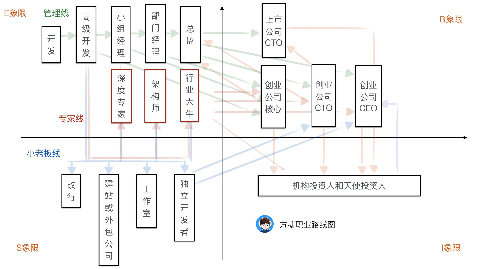
E象限（雇员象限）、帮别人挣钱
E象限是雇员象限。别人给我们发工资，我们帮别人挣钱。这是风险最小的象限，我们的工作任务是别人分配的，只要认真完成，每个月都能得到预期中的收益。
在从开发走向高级开发后，往往就可以开始选择发展路线。E象限的典型的发展路线有两种，专家线和管理线。
E象限的优点是稳定，缺点是天花板非常明显。
S象限（自雇象限）、为自己挣钱
S象限是自雇象限，自己挣钱自己花，一般不雇用别人。比如做独立开发、组建工作室做外包和建站，甚至也可能做一些和编程没有关系的事情。
S象限最大的优点是，自己的业务自己做主，挣的钱也都是自己的。一个三五十万的外包做下来，一年的基本生活保障就有了。
S象限的缺点是，收益未必能比E象限多多少，而风险却高很多。光靠单纯的编程技能往往搞不定，还需要把接活拉活的能力、协调沟通的能力都培养起来。这些能力往往在程序员的舒适区外，需要花精力和时间去培养。因为收入是业务驱动的，所以行业的风险也会直接转嫁到我们这里。
B象限（创业象限）、让雇员挣钱
B象限是创业象限，和S象限最大的不同是我们不是自己干活，而是雇用其他人来帮我们干活挣钱。
它的优点在于，可以让我们从S象限的天花板中解脱出来，拥有规模化成长的可能性。
而缺点在于，它有一个比较大的固定成本。即使是对于轻资产的互联网公司来说，也是如此。比如人力成本。招聘、组建、培养一个团队是非常耗费时间和精力的，所以即使当业务不好的时候，我们还是需要支付大量的工资来维持团队，以便之后能快速恢复业务。
I象限（投资象限）、让钱挣钱
I象限是投资象限，是在我们有了一定的资本之后的一种让钱挣钱的方式。在B象限里，我们需要创办企业来挣钱，这需要大量的精力。即使你的精力异常充沛，同时运营三五家公司也就到上限了。I象限让我们以投资的方式参与到大量的公司中去，共享这些公司的增长，从而实现资产的增值。
在了解了四大象限以后，我们可以发现，如果赶不上公司上市这种可遇不可求的事情、或者能一路升迁做到大公司高层，先不说财务自由，光是要想在北上深买房安家，只留在E象限都是非常困难的 —— 我们必须向其他象限发展。
没有副业的职业
然而在没有副业的情况下，我们的职业就是单进程、只能做单选题。
我们在象限之间的移动，往往只能是突发式的。前一天还在E象限做雇员，第二天突然就辞职创业或者做外包去了。然而贸然进入一个新象限，将面临非常大的风险。因为每一个象限，它背后的商业模式是不同的，对人的能力、思维、精力的要求也都完全不一样。
E→B，辞职创业
先来说说「辞职创业」。
媒体很喜欢把创业宣传得一蹴而就，仿佛只要有一个独特的想法，就可以一夜暴富、咸鱼翻身。
程序员群体的理想主义趋向又比较明显，加上有无数包装出来的成功案例，所以这是程序员从E象限移动到B象限最常见的途径。
有激进派的，拿着自己的一点积蓄就英勇地加入的创业的队伍；有稳健点的，在搞定了天使投资以后再离职的。
但创业的光环在市场的面前毫无用处，要找到一个真正有商业价值的需求非常困难，往往要花很长的时间试错。而后，还要针对这个需求做出比现有方案至少好十倍的新方案。同时，还有大量公司管理、人力招聘、融资沟通方面的事务，这些都会让创业新手难以招架。
不少程序员朋友找我聊他们的创业想法，我发现他们真的只有想法 —— 完全没有进行过验证，他们并不了解B象限的生存法则。
E→S，回老家开工作室
S象限，在这里可以看成是 Easy 难度的B象限，因为自雇没有员工，可以不处理公司管理相关事务。
最熟悉的讨论就是回老家结婚，不，开工作室。我有不少北漂朋友都选择了这条路。本质上来说，这其实是一个好选择，但问题在于，如果没有做好前期准备，失败率也是非常高的。
在大公司工作的人容易产生一种幻觉，那就是把平台的能力当做自己的能力。以大公司的身份去和别人谈合作的时候，感觉都很容易。等到自己离完职才发现，同样的客户，你根本都见不到人。
我知道不少朋友都是因为高估了自己拉业务的能力，最后不得不又重返北上深。
加上全球经济放缓、美元投资减少，这种单线切换的方式又包含巨大的风险，所以很多程序员都选择了被锁死在E象限，成为永久的打工人。
我并不是说打工不好，但如果你不能较快地晋升到高级职位的话，就要仔细考虑如何应对正在形成的35岁新门槛。
副业带来的可能性
当我们有了副业，情况就完全不一样了。
因为我们从单进程变成了多进程，可以并行地进行尝试。最重要的是，这种尝试并不会影响我们的主业，不会降低我们的生活质量。
我们还是以上一节的两个例子来看。
E→S，回老家开工作室
采用副业的方式操作，我们在离开北上深之前就可以创立自己的工作室，并开始接活。一方面拓展客户，累积口碑，另一方面，我们还可以从客户的案例中提取重复需求，将其产品化、服务化。等到有了自己的客户和产品，我们在哪个城市已经不那么重要了，甚至可以在全国一个城市住上那么一两个月，一边旅行一边工作。
E→B，创业
有了副业，B象限等于完全开放了。不要纠结于是否成立了公司，那只是一个形式。真正驱动公司的是业务能力和运营公司的能力，而这些我们都可以通过副业练出来。
把创业想法以 Side Project 的方式来运作，以最简单的产品直扑最核心的需求。没有经验和所谓的产品感都不要紧，因为副业我们是输得起的。这个项目找不到需求，那么复盘以后开始下一个。那些创业公司花大价钱验证的认知，我们通过 Side Project 同样能获得，只是时间可能更长一些而已。
这种低风险的创业模式，也是非常契合当下的创业环境的。创新工场的汪华在2020年4月的一场分享中提到，移动互联网信息、交易等纯界面层的战争已经基本结束，那种靠想法和快速扩张的打法，已经很难奏效了。
所以通过副业的方式，扎扎实实地经营一家企业，靠对市场的理解、优质的产品、良好的管理和持续发展取胜，才是新时代更好的选择。
可以看到，引入副业后，我们可以以低风险、并行的方式在职业象限中移动，为职业的发展带来了无穷的可能性。
职业自由度
从中指备用金说起
前面说了副业给我们的职业带来了更多的可能性，接下来我们就来看，副业给我们的职业带来的更大的自由度。
首先是职业选择的自由。
这里我们先来讲一个比较有意思的概念，它叫做 F*** you money。这是国外的一个词，我们把它翻译成「中指备用金」。
它指的是一笔钱，数量大概是这个样子：突然有一天你跟老板闹翻了，你可以竖起中指，跟他讲说老子不干了，然后辞职回家。在这种情况下，你的生活质量也不会受到影响。
标准意义上的「中指备用金」，其实是和财务自由差不多额度的一笔钱，是以「不工作」为前提的。如果大家在北上深，要做到财务自由还是很难的。
我们这里要讲的是以「换工作」为前提的一个低配版本。也就是说，你可以随意裸辞，在找到下一份满意的工作之前，这段可能会长达半年甚至一年的时间里，没有任何收入，但你的生活品质不会受到太大影响。
很多年轻一点的同学可能觉得根本不需要这种备用金，因为现在的 90 后 00 后正是这么干的。但是当你的年龄稍微大一些，还着房贷车贷、养着老人小孩的时候，要是突然没有收入来源，压力实际上是非常大的。
而副业，恰恰可以为我们提供这么一笔钱。可能总额不大，但可以持续不断的提供。
比如我现在的课程放到网易云课堂上，即使自己不在微博去做主动的营销推广，通过网易平台上的自然流量进行的课程转化，也会有几千块钱。
我现在在重庆生活，这边房租非常的便宜，一个近七十平的小两居，房租每月不到两千。加上日常花销，也就几千块钱。所以现在即使不去上班挣钱，副业也可以在相当长的一段时间里保证我的基本生活不受影响。
这种情况下，我们就可以花更多的时间去思考自己的职业、未来和人生。去做一些短期内收入不明显，但长期收益巨大的决定。
这也就是副业带来的选择自由。
PlanB和反脆弱
除了可以给我们的职业带来自由度，副业更可以为我们的职业引入反脆弱结构。
「反脆弱」这个概念，它来自塔勒布的书《反脆弱——从不确定性中获益》。

在书里边，塔勒布说，他之所以要专门造一个词，是因为大家往往对脆弱的反面有所误解，以为是「坚强」，也就是类似软件的「鲁棒性」。但事实上，反脆弱性比鲁棒性更棒。
什么意思呢？鲁棒性是说在风险来临的时候我们要做到不受影响。而反脆弱性更上一层楼，它说的是，当风险来临的时候，我们不但不受负面影响，还能从风险中受益，变得比原来更好。
具体到职业上，鲁棒性是说，万一现在公司发展不好，我们可以很容易地跳到平级的其他公司，继续我们之前的职业路线图。
而反脆弱性是说，当现在公司发展不好，我们可以很轻松的切换到另一个职业象限，实现跨越式的职业发展。
如果我们精心选择并发展合适的副业，它能带给我们的，正是后者。为什么这么说呢？这是由副业的天然特性决定的。因为它是我们用业余时间、在资源紧缺的情况下发展出来的。如果我们能把它转为主业，而它依然保留了对时间、资源需求不多的特性，那么这份工作就会极为舒适。
全新的工作自由度
接着上一节，我们来看看副业带来的、全新的工作自由度。这里我们多展望一下未来，主要是给大家鼓气。副业是很累的，要把别人用来休息的时间用到额外的工作上，多想想它的好处可以鼓励我们坚持下去。
当然，就像前边提过的，工作自由度最高当然是财务自由，上不上班都行，完全没有压力。我们这一节要讨论的是，在暂时还必须上班的情况下，我们可以取得的一些自由——我们就叫它「工作自由」吧。
我一般从三点上来看工作自由度：
- 工作地点的自由
- 工作时间的自由
- 工作内容的自由。
不同的工作方式，有着不同的自由度。
远程办公
比如最近新冠流行，很多公司都开始搞远程办公了，有些大公司甚至宣布员工可以永久远程办公。远程办公这种工作方式，就实现了工作地点自由。你可以去公司的办公室、也可以在自己的家里，甚至是在旅游的路上办公。
但是，远程办公并没有实现工作时间和工作内容的自由，你依然要和其他人同时办公，区别只是以前面对面，现在改成视频了而已。
freelancer
freelancer，就是那种在网上接单并收取报酬的工作者。这种工作方式在工作地点上同样是自由的，而且经常全部内容都是自己做，需要和别人沟通协调的内容不多，客户主要卡交工时间，只要能赶上进度，时间是可以自己安排的。所以它还实现了工作时间自由。
但freelancer没有实现工作内容自由，因为工作内容都是由客户指定的，绝大部分情况下，都不是你自己想要开发的东西。
独立开发
再来看独立开发这种工作方式。它通过售卖独立的软件、游戏或者在线服务来赚取收益。所以在工作地点、工作时间上都是自由的。
由于是自主售卖产品，它在工作内容上，也是自由的。
这里是举个例子，实际上还有很多在地点、时间和内容上都很自由的工作。比如网课讲师。

有意思的是，正是因为这些工作自由度高，所以适合作为副业来操作。反过来，一旦实际成熟，我们可以让副业反客为主，变成主业，从而随心所欲的掌控我们的日常工作。
职业成长性
新技术练兵场
前边说的都是当职业需要跨象限的时候，副业能提供的可能性和自由度。但其实，即使你就想循规蹈矩地在一个固定的职业象限里发展，它也能提供非常大的帮助。
首先，副业可以成为新技术的练兵场。
现在社区里边吐槽得很多的一个现象是「面试造火箭，上班拧螺丝」。去面试一个前端岗位，问一些前端框架的最新版细节、底层原理，这是合理的，属于前端的业务范围。但如果把深度学习、大数据、云原生、容器编排、区块链甚至量子计算都拿来面试，就有点装了。

但是面试本质上就不是合格考试，而是竞争考试 —— 是要在一群人中选择最好的，所以这也还可以理解。但最不好理解的是，当我们过五关斩六将入职以后，发现这家公司还在用十年前的技术栈，代码管理用的还是 SVN。
不光是小公司、也不光是传统行业；甚至在一些互联网行业的大公司的某些部门里，也会出现这种情况。吐槽规吐槽，但为什么这种情况相当普遍呢？这其实是由于「技术债务驱动的架构更新」导致的。
什么是「技术债务驱动的架构更新」？
把时间拉回五年前，现在有一个业务需要上线，于是我们用当下（也就是五年前）最新的技术构建了这套系统。然后，随着时间慢慢过去，新技术不断涌出，但是线上系统依然能用，业务团队要求稳定；产品团队需要的是不断添加新功能；根本没有机会对技术栈本身进行大幅更新。虽然技术栈逐渐变得陈旧，但是「又不是不能用，理解万岁」嘛。在这种想法下，技术债务不断累积，直到有一天，技术债务快把整个架构压垮了，甚至业务被迫中止一两天后，公司终于决定了 —— 要重新整套系统。于是，又会选用当前时间点最先进的技术来重新开发一套全新的系统。所以你会发现很多公司的系统，它并不是持续不断地更新、不是随时保持最新；而是在新旧之间反复横跳。
由于五年中，业务变动的可能性和幅度都非常大，所以对公司来讲，重写系统是可能比维护系统更合理的。但对于那些在五年里一直用原来技术栈持续不断地维护旧系统的同学来讲，他们的技术栈被迫变旧了。
而当决定开发新系统的时候，公司又希望使用当下最新的技术栈。这就要求原系统的程序员在一瞬间学会新技术，并开发出一套稳定的系统来。大部分人是做不到的，但从公司的角度讲没有关系，淘汰掉，招聘新人组建新团队就好了，说不定成本还能更低点呢。

所以在这种结构的架构更新里边，如果程序员自己不想办法去学新技术，不去找地方去应用新技术，那么就像温水里的青蛙，最后终会用后即弃。
我很喜欢一句话，它听起来有些残酷，但真实，也时时推动着我去学习最新的技术。
一种新技术一旦开始流行，你要么坐上压路机，要么成为铺路石。 —— Stewart Brand
副业给了我们一个坐上压路机，避免被碾压的机会。程序员这个行业跟其他行业还不一样，它对新技术的要求并不只是认知，光知道新知识、了解新思路是不够的，还需要一个实打实的练手环境，花上相当长时间去踩坑，才能稳妥地做出一个稳定的方案。副业提供了一个真实业务，让我们可以把最新的技术用到上面，随时保持技术栈最新，增强主业的职业竞争力。
业务敏感度
除了技术，副业也可以帮助我们在业务上获得新认知，保持敏感性。
之前我们在做程序员职业成长服务的时候，发现了一个问题。很多初阶的程序员没法升到中高阶，有两个很大的非技术影响因素，一个是管理能力、另一个是业务理解能力。
管理能力比较好理解。每一个程序员即使把自己的潜力发挥到极致，成为十倍开发者（ 10x developer），他可以处理的事情也是有限的。
但是如果管理能力好，他就可以培养出很多拥有和自己同等技能的人，这样就不只是十倍、而是可以成百上千倍地复制能力，为公司增加更多的生产力。
业务理解能力这一块，是因为在绝大部分的公司里，技术都是为业务服务的。所以需要针对业务的各种需求、各种流程来做解决方案。
如果对业务不了解，那么即使技术很不错，因为不知道某些业务细节，最后设计出来的方案可能也不是最优的。这就像我们小学时做应用题，有一个隐藏条件包含在业务逻辑中，如果忽视了它，即使数学再好，做出来的答案也是错的。
所以，程序员应该需要培养自己对业务的理解能力。但比较讽刺的是，很多公司的初阶程序员，恰恰没有机会去了解业务。尤其是一些比较大的公司，很多业务相关的问题都是在中高阶的技术决策层就已经解决掉了，分配到初阶程序员这里，就只剩下一些规划好的、待实现的技术方案了。
这就会形成职业上的一个断层，让初阶程序员无法变成行业专家。很多公司是无意的，也有极少数公司是有意为之。因为高阶的岗位是有限的，如果你成长起来后没有位置，就会跳槽了。所以，公司不培养我们的时候，我们就只能自己培养自己。
而副业正是磨练自己的好方法。我们可以做一个跟我们主业相关的副业，通过自己的项目来了解需求、理解业务，从而弄明白公司在做什么样的事情，怎样才能做得更好。将自己从一个纯粹的螺丝钉，变成独当一面的解决方案高手。
如何优雅地做副业
想明白核心资源和核心优势
在通过大量章节充分了解了副业的重要意义之后，相信大家已经明白了「为什么」。下边我们开始来讲「是什么」和「怎么做」。
在做一件事情之前，我的习惯是要想明白它的本质，弄清楚它的核心资源，了解它的核心优势。
副业的核心资源
来看我们这本书的副标题 —— 「程序员如何优雅地做副业」。它有两个重点，一个是「优雅」、一个是「副业」。
既然是「副业」，就表明我们还有一份作为「主业」的正职工作。副业只是我们从本来已经很繁忙的工作、生活时间里面活活挤出来的一点时间精力去做的业务。
所以对于副业来讲，最核心、最宝贵的资源，就是我们的时间片。
为什么这么说呢？
因为对于一家企业来讲，它有足够多的资源可以调配。它可以通过雇人的方式，批量增加可用的时间片。但是对于我们处于「副业」状态的业务来讲，精力和资源都是非常有限的。
副业本来挣得就很少，如果还要去雇人的话，每一个人分下来就会更少，会有入不敷出的风险。另外，人多了以后，在沟通上、管理上的成本也会飙升。所以副业的人应该尽可能少。
于是，时间片就成为了整个副业中，最为有限、最难拓展的资源。我们应该围绕紧缺的核心资源来规划副业。
副业的核心优势
我们的目标读者是程序员。大部分的程序员要么是在写软件、要么是在写网站、要么是在写APP，通常属于软件或者互联网行业。
软件行业和互联网行业的竞争是非常激烈的。而我们在上一节里面说过，副业它有一个先天的特点，或者说是不足，也就是我们能在这个业务上可以投入的时间和精力是非常有限的。
市场是非常残酷的，它并不会管你这个产品的制作方是个人还是公司，开发它的程序员是全职还是兼职。最终用户会以同样的标准来看评判产品，优胜劣汰。
那在一个竞争如此激烈的市场里面，一个先天投入不足的业务，凭什么可以战胜其他的项目，获得成功呢？这是我们开始之前就要想明白的问题。只有想明白了这个问题，我们在做副业的时候才是有的放矢，而不是随波逐流。
这个问题困扰了我挺久，后来在读《创业就是要细分垄断》时，里边一段话让我觉得非常有启发。
它大概意思是说，所谓的「快鱼吃慢鱼」，并不是说人家加班到晚上12点，你就天天逼着员工加班看凌晨四点的中关村。快鱼的快不是这种意义上的快，而是策略上的快。
书里还举了 AirBnb 的例子。它通过共享的方式来创造供应，AirBnb 增加一个民宿只需要几天，而连锁酒店可能要花上半年。就算连锁酒店的员工每天工作85 个小时，也赶不上 AirBnb 的速度。这就是策略上的快。
所以，回到副业上面来，如果想要我们的副业具备很强的竞争力，我们就必须根据其独有的特点，为其制定一个有竞争力的策略。
比如说，我们的副业项目往往规模不用做到特别大。因为如果我们想做到财务自由，那么1000万左右的人民币基本上也就够了。1000万这个数字对个人来讲可能很多，但是对于企业来讲，其实是一个非常小的市场。尤其对于一些以融资方式发展的创业公司和上市公司来讲，这种规模的市场根本就没有办法生存。所以，如果我们选择的目标市场足够好的话，是可以避免很大一部分公司的竞争的。
当然，即使是在一两千万的市场里边，仍然会有不少的竞争对手。我们仍然需要结合副业的特点来构造自己的优势。这里给大家介绍其中一种，叫做「副产品优势」。我们本身是有正职工作的，通过日常工作，会积累很多的经验知识和其他资源。如果我们把这些东西利用起来，把它做成副业的产品的话，它的成本是非常低的，而在深度上，往往又会有很高的门槛。
举一个实际的例子。
比如，我一个朋友是云平台的架构师，他的工作是专门为传统企业往云平台上做业务迁移提供解决方案，方便这些企业购买他所在公司的云计算产品。
但是在这个过程中，他接触了大量的、各行各业的公司的迁移需求，并为他们做了架构方案。这让他的架构能力突飞猛进，架构经验也远超旁人。
这个时候，如果他以副业的形式，开设讲授架构技巧的课程，对他来讲成本是非常低的。因为无论他做不做这个副业，都要投同样多的精力在这件事情上。
作为对比，如果一位全职网课讲师想要来做同样主题的课程，那么就需要从头开始学习完整的架构知识，并花足够长的时间，比如说几个月甚至几年，去接触大量的实际案例，最终才可能做出同样品质的课程。
而对专职讲师来讲，他的收益仅仅是课程收益，并不包含主业的薪资，所以最终收益甚至可能还赶不上他为了制作课程进行的投入。在这种情况下，全职反而成为了一种劣势，这就是我们所谓的副产品优势。
当然，我们还可以根据副业的其他特点，发掘出各种独特的竞争力。但只有围绕核心的稀缺资源进行规划，并从策略上建立我们的核心优势，才能真正做到优雅地做副业。
时间片
这一节开始，我们就来讲讲副业的核心资源——时间片。
时间片的销售
前边说过，时间片是我们副业的核心资源，所以直接把它以一个比较低的价格销售出去，是不划算的。这种方式和「优雅」这两个字不太匹配，但我们这里还是会简单介绍一下。
它不会作为我们这本书的重点，但大家有一个简单的了解也是好的，至少可以作为其他副业方式的对比。
私单
不经任何加工直接销售时间片，最主要是以「私单」的方式来进行的。
外包
传统的私单主要是外包模式。也就是说，一家公司有一个项目要做，它把这个独立项目完整的包给你。双方约定完成的时间、验收的标准和价格。大一点的项目，还会有阶段性的交付和付款。
除了这种完全线下的外包，还有基于网络的 freelancer 方式。大体上是基于网络接单，然后按发包方的要求进行开发。因为没有地域的制约，可以承接国外的业务。
目前的情况看，中国程序员在海外外包市场上并不占据优势，尤其是个人。因为现在海外接单平台上有大量的印度、巴基斯坦等国家的程序员，他们要价非常的低，而且平均而言，英文沟通能力比中国程序员要强一点。接这些单子会比较累。
做起来比较舒服、利润比较多、沟通上比较容易的私单，往往是通过行业人脉和开源项目来的。
外包的坑
大部分的外包在我看来都是很痛苦的，因为它其实和程序员的技术栈不对应。
沟通问题
我们平时在公司开发时，都是产品经理把需求梳理好，然后和程序员进行沟通，好一点的还有高保真原型。即使在这样的情况下，进行需求调整的时候，我们还是会很难受。大量的代码需要改动，如果上线时间表比较紧，我们就会被逼着加班。
而外包模式下，需求方往往就变成了外部的人群。因为个人的工作量有限，所以通常不会是特别大的单子，这就有可能遇到大量不靠谱的发包方。他们很可能并不了解开发的流程，也表达不清自己的需求。
这就要求我们有相当的沟通技巧。如果是基于网络的沟通，效率会进一步降低，问一句得等半天才能有响应。
甚至，很多时候我们会被迫去做需求分析工作，因为整个环节中缺失了产品经理 —— 很多发包方觉得根本不需要这个中间角色。
尾款问题
即使熬过了开发阶段，还有一个尾款收取问题。新手容易因为太过信任对方先交工再收钱；老手也逃不掉那种开发完了对方的创业公司倒闭了的情况。
比较大的项目或者面向特定行业的项目，在签单之前可能会有招投标，然后可能会有层层的审批。在款项的时间预期上要有心理准备，经常会有项目都做完了审批还没有走完的情况。
项目全部由自己开发还好，如果需要其他人的配合，那我们就需要自己垫付资金。这些风险需要合理的控制。
开票问题
个人做私单还有一个烦心的事情，就是大部分的单子都是需要开具发票的。这时候就只能去找一些公司代开。这种代开是有费用的，所以在定价的时候要把这些也考虑进去。
按需雇用
正是因为这种整单外包的方式会带来各种麻烦，最近开始出现一个更加「简单粗暴」的私单方式，叫做「按需雇用」。这是面向发包方的说法，对于程序员来讲其实应该叫做「驻场开发」。
我们平时都有正职工作，但是如果不是去了黑心企业的话，周末的时间还是空出来的。这时候我们就可以到其他公司去上一两天班。通常是一些创业公司，去解决一些他们的开发没有能力或者精力解决的问题。
在这种模式下，费用是按时薪结算，沟通也更为顺畅。只要像平时一样多上一天班就可以获得好几倍的回报。而且当天晚上就可以获得收入，也没有尾款的烦恼。
所以如果非要销售时间片的话，我觉得这种方式更高效一些。
更优雅的方式
但是正如我们前面所说的，你的时间片是非常有限的。像按需雇用这种方式，虽然收益看起来高一点，但它的天花板也是非常明显的。
我们可以很容易地算出来。假设我们每周末拿出一天，一个月也就只有四天而已。就算一天能挣2000块钱，一个月也就是8000块钱。
这是最理想的情况下，因为只能周末工作，所以往往并不是每周都会有活；同时，如果遇到开发内容不是特别熟悉的情况，可能还要花一点时间去学习相关的资料。
整体来讲，我们认为私单，尤其是按需雇用，属于一个中高收益、中低风险、但是也有明显的收入天花板的一个副业。
时间片的优化
时间片的优化有两个思路。
提升单位时间的收益
提升单位时间的收益其实就是提升时薪（但并不一定局限于按时薪支付的副业，其他形式可以折算成时薪），有几个简单的思路。
切换地域
「切换地域」就是说，我们同样是干活，但如果服务对象所在的位置不同的话，单位时间的收益也是不同的。
比如你在重庆，给本地公司去做一些外包，那整个项目的基础价格就是参照当地程序员的人工成本来进行比价的。但如果是在重庆可以给北京的公司做外包，那发包方就会更多地参照北京的各种成本来进行相应的股价，这样我们就可以把自己单位时间的收益提升上去。当然，需要考虑沟通的效率和成本。
把这个思路扩大一点，就变成在国内做国外的业务了。
因为和国内相比，国外的人力成本通常会贵很多，如果你在二三线城市，那么成本又更低。这样就出现了一个价格差，如果能控制好这个价格差，我们就能挣到更多的钱。
当然前边也说过，这里边有竞争和外语沟通的问题，需要根据自己的实际情况来选择。
从外包到二次开发
在没有建立起自己的知名度之前，非常单纯地去做外包，面对的往往是价格战的红海。地球那么大，总有人的时间比你不值钱。
而且外包它是一个开放性的需求，如果真要把很多雇主的需求细细做好的话，对技术栈的广度要求还挺高的。因为每一个项目它要求的技术栈可能不一样。项目做的越多，用到的偏门技术就可能越多。
所以我们要想办法解决竞争的问题。细分市场就是一个很好的思路，比如说我们可以给一些标准化的开源产品做二次开发来挣钱。
这其实不是什么特别新的思路，早在个人站长时代就有人专门给 Discuz！这个开源论坛软件写插件和定制功能挣钱,而且还真养活了不少小公司。
现在我们可以把这个思路更扩展开一些，比如说我们把从「支持国内项目」变成「支持国际知名的项目」。
这样的话，我们就能解决掉出海接活面临的大部分起步问题。
你看：
- 我们从什么地方来获得客户？直接从开源社区获取客户。
- 如何证明我们的开发能力？ 可以写一些高质量的开源插件，给大家免费使用，并作为我们的demo。
- 如何来获取比较高的收益？专门给一个项目写插件的团队并不是太多，选择够好的话，就可以成为这个细分领域的No.1，获得一些品牌上的溢价。
提升单位时间的效率
提升单位时间的效率对于按工作量支付的副业来说特别重要。
比如说我们现在有一个项目，交付后的收益是10万块钱。以原来的方式完成它，可能需要花100个小时。现在我们想到了一种新办法，把效率提升了10倍，那么原来100个小时才能完成的活，现在10个小时就能做完了，这就是效率的提升。
多出来的90个小时我们可以用到其他项目上，哪怕是用来休息，也是很好的。
打鸡血难以奏效
当然，通过增强意志力来强迫自己去提升生产效率，其实是很难奏效的。
因为我们本来就是在利用工作之余的时间。在这个时间上，很难保证精力非常充沛。别说提升工作效率，能保证在做这些事情的时候尽可能的不被干扰，不让自己的生产效率降下去，已经是非常不错了。
自动化
但是非常幸运的是，我们是程序员。我们从事的工作，它本身就有一部分是由机器来完成的，所以我们可以引入自动化来提升效率。机器是使用电来工作，它的效率提升空间是非常大的，而且它也不需要休息，可以7×24小时地进行工作。
代码生成器
对于程序员的日常工作来说，最主要的自动化方式就是代码生成器。
但一说到代码生成器，就会听到很多反对声音。如果你用过一些比较早期的代码生成器产品，很可能你也会会有一些负面印象。
在大概十多年前吧，我当时所在的公司也就购买了一套代码生成工具。根据说明书，配置好业务逻辑，然后就可以同时生成ASP、PHP和JSP的代码。
公司买来以后就强制性行推广，但在硬推了两个月以后，发现推不动，只好放弃了。
最主要的原因是因为它没有办法处理我们特有的一些逻辑，加上每一个部门有自己独立的规范和周边库，在那个工具里边没法用上。之后很长的时间里，我们整个部门的人都对代码生成器非常反感。
但是后来还是经不住偷懒的诱惑，我自己一直在偷偷地不断尝试。渐渐地发现，其实要做一套全世界通用的代码生成系统可能会特别难；但是如果只是给自己做一个专用的代码生成工具却非常简单，只要遵循以下两个原则。
只为自己设计
第一个原则是「只为自己设计」。
因为每一个公司，每一个部门甚至每一个岗位它所面临的需求是千差万别的，很难通过一个通用工具来解决，所以我们也很难买到为自己量身定制的工具。
但如果自己来开发工具的话，就完全不同了。我们可以完全按照自己的工作流程、按照每天写代码的需求来进行设计。我们非常清楚写代码的时候，元数据是存放到什么地方的、通过什么样的方式进行加工、以及最终要生成怎样的代码。所以可以开发出非常好用的自用代码生成工具。
能自动化的自动化，不能自动化的半自动化
第二个原则是「能自动化的自动化，不能自动化的半自动化」，后半句特别重要。
很多程序员在设计代码生成工具的时候，往往太过完美主义，老想着要做一个系统把所有的工作都做完，最好点一下按钮后，什么事情都不用去做了。
这当然是最理想的方式，但是我们的开发环境和其他的办公软件之间不一定存在交互接口，很多软件只有图形界面，不支持通过 API 进行数据交换。所以，很多时候我们就没法做成全自动。完美主义或者叫强迫症的同学就会说，既然这个东西不能完全自动化，那就直接手动来处理吧。
但我们开发代码生成器的根本目标并不是要做一个完整的自动化产品，而是要提升我们的生产效率。所以，即使有一些地方不能做到完全的自动化，我们也可以把它做成半自动化。
半自动化有两个思路。第一个思路是，我们可以通过交互方式来解决一些不能自动化，或者需要花很多时间去处理的细节问题。
举一个例子，这个例子发生的年代比较久远，现在可能已经不适用了。
我们当初在做网站的时候，有很多的资料都是编辑给的。那个年代还没有产品经理，都是由网站编辑给我们资料。他们都使用 office 软件来存放数据。
当时是没有比较好的 office 格式解析包的，所以很多同学都放弃了数据的解析，改为手工输入。我给了一个解决方案，就是直接在 office 里复制数据表格，然后再粘贴到一个 textarea 里，最后用 PHP 分析 tab 和换行符号，把数据分离出来。为了防止分析错误，还做了一个界面来进行确认和手动修正。虽然没能实现全自动，但是比起手工输入数据，这个方案效率的提升是几十倍的。所以不要过分纠结于全自动化，有的解决方案不完美，但也可以很精彩。
另外一个思路是，只对小操作做自动化，用来生成代码片段。比如说，我们在写输入处理的时候，往往需要根据数据表字段来对输入进行验证，这往往是一个重复劳动。所以，我就写了一个命令行的小工具，它可以直接读取数据表里边的字段和对应的注释，根据注释里的标记来判断对应的字段的验证信息，最后会自动生成验证部分的代码。我把这些代码粘贴到编辑器后，再进行相应的修改，就可以很快的完成验证工作。这没有什么技术含量，但是它可以切实提高我们的生产效率。
这些只是我想到的思路，当然还有很多其他的。比如有的同学是通过工具链，通过命令行交互，来实现自动化。
人工智能
代码模板呢，只能解决相对比较死板的规则。但最近随着人工智能的进步，在某些特定的场景下，原来很多低效率的人工操作其实可以交给 AI 了。
现在，AI 的正确率确实达不到和人类同等水平。但是，还是前边那句话，「不能完全自动化的，可以考虑做成半自动化」。针对 AI 正确率不高的场景，我们可以通过人机结合的方式来处理。
比如说，我们要进行图片分类，之前可能需要花上十几个小时的人工。现在使用 AI 进行分类，只需要十几秒。但是它可能有20%的图片分类是错的。
我们就可以先让 AI 来进行分类，然后再人工确认一遍。确认花的时间可能是两个小时，但即使这样，比起之前的十个小时来讲，效率也提升到了五倍。
最近很多人工智能接口的品质已经不错了。比如说，熟悉我微博的同学都知道，我经常会用语音的合成和识别服务来提升内容生产效率。
比如我经常会发一些技术视频，但是又不想自己录音，于是就会使用人工智能来生成语音。而大家正在看的这本书里，至少有一半的内容我是通过语音识别APP，以每分钟100多字的速度记录下来，然后再二次进行修改、校正完成的。
所以不管你对 AI 有什么看法，它现在已经在实实在在地改变着我们的生活。我们要思考的是，如何更好地利用它。
如果服务足够可靠，我们就可以做成自动化服务，直接提供给最终用户；如果服务还不够可靠，我们可以把它放到中间流程里来提升效率。
比如，同样是代码生成技术，如果我们把它做成面向不懂技术的人群的产品，服务不是很可靠的话，最终效果就会很惨；但同样品质的接口，如果我们把它做成面向开发者的服务，而且是在编辑器里面实时地进行代码补全和建议的工具，它就会显得非常好用，可以极大地提升生产效率。
突破时间片限制
前面我们讲了时间片的优化，敏锐的同学可能已经感受到了，时间片的限制其实是有办法突破的。下边我们就专门来讲一下怎么突破时间片限制。
倍增
第一个思路叫「倍增」，就是让时间片的数量成倍的增加。但这里有一个前提，就是不能过多的增加我们的精力消耗和风险。
因为不考虑这个前提的时间片倍增非常容易，只需要增加雇员就可以了。但我们随时都要提醒自己，这是在做副业。
如果我们雇用全职人员，就需要有办公场地、还需要到现场进行人员管理。这对于有正职工作的同学来说，是很难分身的。除非你把办公场地放到正职工作的公司附近，用空闲时间去管理。但这依然有精力上的风险，搞不好既没做好副业，又影响了正职工作，这就本末倒置了。
既然雇用全职的路子走不通，我们就只能考虑雇用兼职。
外包
主要的方式就是将部分业务外包。前边我们其实刚聊过外包，只不过在这里，我们从接单方变成了发包方。
外包的方式，可以将大块的业务交给别人去做，自己只需要花少量的时间片来做沟通和管理。等于接单方的时间片也为我们所用了，所以整体来看，时间片是倍增了。
外包还会带来一些潜在的风险。
我们的时间片是倍增了，但我们的成本也在成倍地增加，也就是说本身我们的项目需要有足够的利润空间才适合使用这种方式。如果控制不好，很可能最后整个项目做下来不挣钱甚至亏本。
另外，外包方式下，沟通和项目管理也是比较大的挑战。因为它不是那种每天在一起的沟通环境、也不是直接的上下级关系。只能以合同的形式来进行约束，很多时候甚至连合同都没有。这种情况下，其中某些环节出现问题，我们就需要为整个项目承担风险。
众包
其实还存在其他的雇用兼职的方式，比如众包。众包和外包类似，但粒度更细，接单方更多，甚至我们都不知道接单方是谁。
一个典型的例子是 Facebook 的多语言翻译工作，他们提供了一个在线翻译工具，让懂该语言的用户每人来翻译几句，因为用户数量庞大，很快就能完成整个翻译工作。
众包的收益非常不错，一方面是成本上的，因为接单方多，所以会产生竞价。如果分摊的工作量非常小，甚至可以是免费的。另一方面是时间上的，同样因为接单方多，完成的速度会非常惊人。
不过，为了支持大量的接单方，我们的业务结构需要进行相应的调整。
比如说，通常我们可以把一个系统分成平台部分和扩展部分。平台部分，我们可以自己制作；扩展部分就可以把它设计成插件、扩展、中间件，将这些东西以众包的方式分出去。即使其中的组件出问题，对我们核心平台的影响也是小的。
这样对接单方来讲还有一个突出的好处，就是这种组件本身的逻辑和它的相关资源是闭合的，只需要知道输入输出，内部实现完全可以自己决定。组件开发者之间也不需要沟通，只需要跟平台以文档、API的形式来进行沟通，在使用细节上以工单的方式来进行反馈就可以了。这可以大幅度降低我们的管理成本。更进一步，我们可以开发工具来对众包进行支持，进一步提高效率。
所以，如果能培养起好的众包生态，我们是可以实现低投入的时间片倍增的。对于不想开公司、对时间片又需求大的业务来说，是非常值得尝试的。
超卖
另外一个突破时间片限制的方式我叫它「超卖」，就是把一份时间片卖给多个人。
在很多非常个性化的业务里边，我们是为对方专门定制的服务和内容，所以一份时间片只能卖给一个人。但是，当我们业务做得足够久了之后，就会聚集起来很多有相同需求的人。
这时候我们就可以把他们的公共需求抽取出来，做一份面向这个公共需求的产品或者服务。这样的话，我们只需要花一份时间来做产品，就可以把它卖给多个人，也就间接地实现了时间片的超卖。
比较典型的例子是建站。这曾经是很多小公司赖以生存的业务。在最开始的时候呢，建站公司都是去跟客户谈，想建一个什么样的网站，然后找设计师进行界面设计，完了以后再进行开发。这种服务就是一对一的时间片售卖。
但后来很多公司发现其中重复的需求太多，于是就把建站的需求做成了一个系统。在这个系统上，客户可以自行选择模板，添加功能模块，输入内容，通过浏览器就可以很快地生成自己想要的网站。整个过程甚至不需要其他人参与。
从个性化服务到标准化服务，是实现时间片超卖的主要思路。
再举一个更明显一点的例子。熟悉我的同学都知道，网课是我一个很重要的业务。但和其他的机构不同，我从来不做直播课。所谓直播课是说，我提前准备好教学内容，等大家都上线了，然后我们在一个直播房间里边，一边讲课一边学习。相对的是录播课，是说我提前把这个内容录好，然后大家自己找时间去看视频就好了。
从讲师的角度来看呢，直播课就是一对一的时间片消耗模式，每讲一次，都要消耗一次我的时间片。而录播课则是一对多的时间片消耗模式，不管有多少学员，他们只需要去看录制好的视频就行，我付出的时间片不会增加。这也实现了时间片的超卖。
从上边的两个例子可以看出，时间片的超卖背后，实际上是商业模式的调整。
最理想的情况下，我们只需要付出一份时间片，然后即使我们什么都不做，它都可以持续不断地进行售卖。不管我们是在吃饭睡觉、看电影逛街、还是在旅行休假，这个产品都会持续不断地给我们带来收入。这种收入我们称为被动收入，能带来被动收入的东西，我们叫它资产。
资产和被动收入
什么是资产
资产的定义见仁见智了，我比较习惯用罗伯特·清崎在《穷爸爸富爸爸》里的定义，那就是「能把钱放进你口袋的东西」就是资产。换句话说，能产生被动收入的东西，其实就是资产。
《穷爸爸富爸爸》这本书很多人都读过，罗伯特·清崎后来还写了一个系列，核心是富人不为钱工作，而是让钱为自己工作。
在书里边，主要通过「购买」的方式来获得资产。这里是书中列出来的资产类型：
- 股票
- 债券
- 能够产生收入的房地产
- 票据（借据）
- 版税，如音乐、手稿、专利
- 其他任何有价值、可产生收入或者增值潜力且有很好销路的东西
这个系列后来就跑去教人投资和理财了。
其实投资也可以视为一种副业。优点很多，比如占用精力相对较少、没有收入天花板等；但也有两个明显的缺点。
最主要的缺点是风险高，且不易评估。还有一个缺点是，投资你得先有资、理财你得先有财。在风险可控的范围内，大部分投资理财的回报率差异不会特别大。如果你手上一百万都不到，可能折腾一年、背着挺大的风险也就是多挣了几万块钱。
投资理财是一门深奥的学问，我们不在本书中展开，大家可以阅读相关的专门书籍。
在罗伯特的资产清单中，还有一个可以无成本获得类别 —— 版税。但其实在中国因为书卖得特别便宜，而版权又普遍不受重视，一些大公司都堂而皇之地侵权，其实很难获得高收益。
如果没有初步的积累、或者不想背负过大的风险，怎样才能获得资产？
资产的获得方式
资产最简单粗暴的获得方式当然是通过购买。但好的资产未必人家愿意卖，当然更可能的是，我们未必买得起。
但是除了购买，其实还有一个逐渐被遗忘的方式 —— 直接「创造资产」。对于很多传统行业的人来说，创造资产会大量的消耗精力，最后成本可能并不会比购买资产低多少。
但现在软件吞噬了世界，数字化业务已经茁壮成长，数字资产的生产资料日益廉价。而我们是程序员，正是那个可以通过自己的技能栈低成本、低风险的创造数字资产的群体。
并不是每个人都有我们这么幸运，其实大部分的程序员，离完整地做出一个商业产品，缺的可能只是一点美感和设计能力。
资产的量化评估
当然，并不是所有的数字资产都适合我们以副业的方式去创造。不过就像前面不断重复的，副业是一个资源和精力都非常缺乏的状态，我们也只能从庞大的可能性中，选择那些适合的产品和服务。
适合副业的几个特征
说到底有哪些产品和服务适合副业呢？下边是我觉得值得留意的几个特征。
自传播
首先是「自传播」，就是说这个东西做出来了以后，它本身有很强的感染力，它的用户会主动地去推荐给其他用户，这样的话我们就不用花很大的成本去做营销。
对于大部分程序员来讲，把程序写出来只是时间和精力问题。写不出来程序的程序员很少，但卖不出去程序的程序员非常多。所以，如果我们做的东西本身就能传播，那么我们就可以在零市场预算的情况下获得成长。
UGC
第二类叫做「UGC」，用户贡献内容，它其实可以理解为一种更广意义上的众包。核心也是突破时间片限制。比如说我现在经营一个原创博客，天天都是自己写，就会觉得自己累得都不行了。
但如果我们去做一个访谈类的博客，弄一个相对固定的问题列表，然后拿着这个列表去采访各行各业的人，把结果做成一期一期的内容。这样用户就贡献了至少一半的内容了。
如果我们再改成办一个杂志，每一期大家根据主题投稿，你就从主创变身成编辑了。虽然投稿里有好有坏，良莠不齐，但我们的主要任务已经变成去筛选了，只要贡献内容的用户足够的多，那整体质量还是有保证的。最主要是内容的量就上来了。一个人的话，不管你多么努力，总是有一个上限的，因为你毕竟是人类。
自动化
「自动化」前边有提过。
就是说应用做起来以后，它所有的环节全部都可以由机器完成，我们什么都不用管，只需要把它扔到云平台上，然后定期给云平台打钱。当然这是一个理想的情况，意外总是会出现的，而且各种意外会约好在同一天出来逛街，别问我为啥知道。但是在绝大部分情况下，我们都可以不去管它，它都可以自动化运行。这种被动资产是非常适合副业来做的。
量化评估标准
我们也可以更为量化地给资产定一个评估标准，确定好要考察的几个方面，每个方面做一个满分为5分的评分，对每一项评分就可以得到一个多边形，从而一目了然的看到各类资产的状况。
这个标准每个人的想法可能不同，这里分享的是我自己用得比较多的标准。
投入
项目的一般投入都是三项：「人」、「钱」、「时间」。
「人」和「时间」不多说，通常就是我们自己和挤出来的那点时间了。
「钱」方面，我们也需要一点启动资金，但不用花大钱去购买各种固定资产。这也是我们这个行业能自己动手创造资产的一个重要原因。尤其是现在，云计算已经普及了。即使是很大访问量的网站，我们直接租用云服务，按用量付费，省钱又省心。我大学刚毕业的时候，要是做大点的网站，还要自己去买服务器，自己扛去机房托管。现在只需要点点鼠标就能买到一堆 vps ，其实是蛮幸福的。
要提醒大家的是，一定不要忘记维护成本。我们卖时间片的时候，活干完就完了，钱就拿到手了。 但是在自己创造资产的时候，资产的每个细节基本都得自己来 cover 的，所以维护成本一定要算进去。
维护成本往往不是那么显而易见。比如说吧，网课也是有维护成本的，尤其是技术类的，它的更新成本其实相当高。
产出
在评估产出的时候，可以分为「一次性的回报」和「周期性的回报」。
一次性回报，比如我们给人家做技术顾问。可能就是在周三拿到一个邮件介绍说是什么样的一个需求，有什么问题要解答。我们花上2~3个小时来准备，在周末约一个时间，面谈一个小时，把之前准备的内容聊清楚，聊完了以后，回报就拿到手了。这就是一次性回报。
周期性回报，比如说我们在掘金上写了一个小册，那只要有人在购买，我们就会不停的有收益，这种收入一般按月结，所以每次看起来没多少，但加起来还是挺多的。我之前算了一下，发现在我创造的各种资产中，掘金小册的投入产出比是最高的。
可持续性
持续性是以前忽略掉的评分项，后来被我追加上来。这其实是一个非常浅显的道理，一个资产放在那个地方，它不可能一直就持续地挣钱。就像电池光用不充电的话，总会有用光的一天（别和我提太阳能电池）。
这是因为我们创造这个资产的时候，它是面对一个市场需求的，而需求本身它会随时间变动。绝大部分的情况下，需求和我们提供的解决方案之间的契合度，会随着时间越来越差。最后就会变成，要么我们就不去管它，让它慢慢地随着时间去消亡；要么我们又要花成本去维护它，把它从偏差的地方给拉回来，重新覆盖到需求上面。把用户的满意度、用户的体验、市场的趋势给重新考虑进去，让我们资产的生命期变得更长。
对于不同的资产，只是过程的快慢会不一样，但整体来讲，都是会有这么一个过程的。
风险
程序员创造产品最大的风险是「没人用」，因为虽然大部分科班出身的程序员都学过需求分析，但仍然各种喜欢拿着锤子找钉子。
当然，这对于没有做过独立开发或者自己产品的同学来讲，是一个必经的阶段。所以早期项目的风险都会非常高，但并不是说风险高我们就不做了，我们可以相对的调低投入，原来要投入三个月上线的产品，可以花三天做个最小可行产品（MVP，后文会说明）上线，测试到需求以后，再继续加码。这样也能慢慢的获取到一个平衡点。
门槛
最后我加了一个评估标准叫做门槛。因为「副业」的关系，我们的各项资源都是受限的，这个评估标准体现了受限情况下创造资产的难度。
优选资产
在这一部分，我们整理了大量的副业，并从中拿出适合程序员的来进行评估和讨论。
知识和人脉的变现
付费视频课
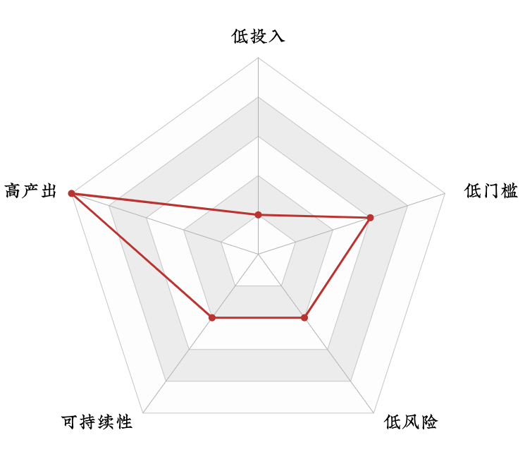
总体来讲，付费视频课是一个中等投入，然后产出极高的副业。
低投入 ★
前期需要做一些课程内容的准备；后期你需要对视频进行剪辑；录音还需要购买硬件。大部分的程序员并没有视频剪辑技能，所以这里有学习成本。硬件的话倒不算贵，便宜点的不到一千就能搞定。但是这是在我们赚到钱之前就要投入进去的。
高产出 ★★★★★
从产出上来讲，课程是一个非常好的品类。中国人有良好的为教育花钱的传统，大部分的用户都愿意为好的课程花钱。一些优质的、上百节的大课可以卖到几千甚至几万。相比其他的副业，它的产出是非常高的。
可持续性 ★★
我们是做技术类的课程。技术内容本身的变更是非常快的，除非我们做一些非常经典的基础课，比如说计算机原理、算法等等。
如果是跟语言、框架、实战相关的各种前沿课程，大概半年到一年就需要更新一次。如果我们使用屏幕录制方式来制作课程，在修改的时候，很可能需要重录相当部分，修改起来成本很高。
低风险 ★★
风险不低。如果做的课程比较长，比如几十上百集的大课，用业余时间来做可能会花上几个月甚至一两年，有时候做完技术都更新了。如果最终卖不出去的话，损失是很大的。
低门槛 ★★★
门槛不算高也不算低。如果经常在公司里面给团队做分享的话，那对你来讲这个门槛就很低。如果一直都是默默无闻地在做技术的话，可能就需要去练习一下怎么讲课。
因为我们最终是可以通过剪辑来进行调整的，所以也只是一个时间投入上的问题。讲得不好，你就多讲几遍；哪一句讲错了，就重新再讲。所以它本身的硬性门槛并不高。
关于风险和维护成本这两点，其实是有办法可以解决的，我们会在后续用专门的章节来讨论，这里就不展开了。
付费专栏

付费专栏就是付费的系列文章，绝大部分是技术教程，也有一些面向程序员的「心灵鸡汤」。我们可以简单地把它看成是传统出版的网络化。
对于技术内容来说，传统的纸书出版方式有一些明显的缺点。比如，不是彩页的话代码不能高亮，彩页的话书又特别贵。书里的代码也不能边看边调试。纸书的出品周期也较长，更新也慢，一些最新的技术会有一个较长的空白期。
而在线的付费专栏恰恰可以解决掉这些问题：它基于浏览器，自然可以通过 JS 来进行代码高亮；内容可以在线修改，几乎可以实时生效；做得细的技术专栏往往还内嵌了基于浏览器的调试环境，可以做到边学边练。
再加上原来技术博客的群众基础很好，于是技术平台和社区纷纷添加了付费专栏功能。这其中，做得比较好的应该算掘金的小册。
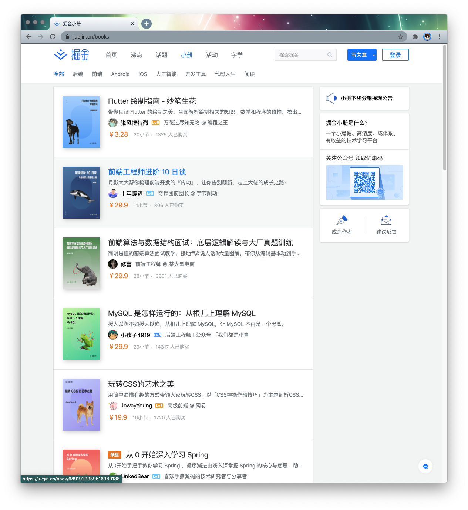
下面我们来看一下付费专栏作为副业资产的各项评分。
低投入 ★★★
从投入上来讲，文字专栏比视频课程投入要低很多。但是技术内容比起其他文章的写作来讲，需要有技术实践作为基础，经常还要嵌入代码，调整格式，投入相对要高些。
高产出 ★★★
文字专栏的售价普遍比视频课程要低，像掘金小册的话，一般就在20~30块钱之间，还经常打折促销。
可持续性 ★★★
前面已经说过，技术内容一般更新频次高。但是图文专栏的更新成本很低，只需要编辑文字、加入新的内容就好，不需要像视频那样重新录制和剪辑。
低风险 ★★★★
文章的创作成本很低，而且我们可以通过发布短文来测试主题是否受欢迎，在确认后再开始系列文章的书写。
低门槛 ★★★★★
只要会写文章，就可以做付费专栏。
付费社群

所谓付费社群就是指一些收费的微信群，QQ群或者付费可见的信息流、圈子类产品。
之所以把付费社群单独拿出来讲，是因为它更偏重于销售的不是内容本身，而是一种人脉关系、社区氛围或者互动型的服务。
像付费课程，通常是类似于出版。我提供内容，你来进行学习。通过文章评论和回复进行互动，时效性和效率比较低。
而在付费社群里边，大家互动起来会比较方便。比如在群里，你一句我一语很快就可以讨论起来。所以，付费课程和付费社群其实是有互补关系的两个产品。
我们可以把付费课程放到课程平台，然后把实时的学员答疑或者其他服务，再做成付费社群。
低投入 ★★★★
付费社群的投入是非常低的。如果我们要做课程的话，需要累积相当多的内容。但是付费社群它卖的不是内容本身，所以即使它没有内容，也可以立刻进行销售。
而且因为社群的互动环境在形式上比较随意，有个什么想法随时发一段文字或者几张照片都可以，内容创作的成本很低。
高产出 ★★★
产出方面就要看具体销售的是什么东西。氛围和讨论环境本身，通常不会特别值钱。但是如果能利用起来，价值就会非常高。比如用付费社群来做中高端猎头服务。
可持续性 ★
需要持续不断的有内容更新。当然也可以引导其他用户贡献内容。如果一段时间没有内容和话题，就很难维持社群的活跃，氛围会随着时间慢慢变冷，严重影响第二年的续费。
低风险 ★★★★★
没什么特别的风险。
低门槛 ★★★★★
会建群会聊天就可以开始。
图书出版

如果把电子书也算进来，目前可以分发图书的方式大概有三类。
第一类是自己独立撰写图书，并生成 PDF 等电子书格式通过自己的渠道进行销售。这种更类似于数字商品售卖，所以并不包含在本节图书出版中。
第二类是通过出版商单独发行电子版。因为电子书不需要印刷，所以比起纸版图书门槛更低一些。我之前用 BookDNA 出版过电子书，只需要将书提交给他们，就可以上架到亚马逊、苹果、京东、多看等多个平台。收入他们会代收，按分成结算回来。
第三类就是通过出版社出纸书，有时候也会同时把电子书版权签下来。一般纸版的门槛会高一些，需要有一定的影响力或者完成度已经较高的书稿作为参考。
低投入 ★
图书出版的投入非常大。一般至少需要花费3到6个月来编写初稿，加上审校印刷等环节，最后出版可能还需要花上半年，整个周期很长。
基于现有的内容，比如课程、文章整理创作书稿投入会相对较低，但仍有大量的工作要做。
高产出 ★★★
产出要把物质回报和非物质回报分开来看。
通过 BookDNA 等出版社专门出版电子书，可以按图书销售收入获得分成，大概在 70% ，还算不错。如果是纸版书，一般版税就只有 8%~15%，整体收入相当有限。
但纸版书对个人品牌提升的效果明显，而且可以通过线下书店等渠道获得读者，所以在非物质回报上比较高。
可持续性 ★★★★
图书的更新频次都很低，一般只有销售得不错，才会在再版时进行修订。所以我们可以认为它的可持续性还算不错。
低风险 ★★★★
主要还是时间投入，没有太多额外的风险。因为我们主要是出版技术书籍，内容方面的风险也非常小。
低门槛 ★
不管是电子版还是纸版，都要经过图书编辑审核，通过以后才能出版。尤其是纸书，要考虑至少收回印刷成本，所以门槛还是很高的。
如果在 GitHub 或者其他地方有发布电子书，且有较好的反馈，那么纸版的出版谈起来门槛就会低很多。
自有产品和服务
那接下来我们就来聊聊程序员的专业领域 —— 通过开发自有的产品和服务、作为 side project 运营来变现。
需求的发现
首先要说的是很多同学都很困扰的问题。
我以前以为最困扰的问题应该是如何抽出时间和精力来做一个项目，但后来发现还有一个同样甚至更为困扰大家的问题，那就是有了时间以后，不知道做什么。
通常来讲，解决方案有两种。
一种是通过日常的工作和生活发现原生需求；另一种是通过观察分析和阅读报告来发现。
原生需求
最靠谱的方式就是，留意那些我们自己在日常的生活和工作中遇到的困扰，然后为它去做解决方案，最后把这个解决方案做成产品，出售给有同样需求的人。
这种需求叫做原生需求，不是我们因为有了某个技术而幻想出来的应用场景。原生需求不是等我我们去寻找，而是它会主动找到我们。这种需求非常真实可靠。
但有一个问题，我们程序员相对于整个大众来讲，其实是一个非常小众的人群。这个人群有一些独特的文化、行为和思考方式。所以程序员遇到的原生需求，很可能只适合程序员人群，而不适合其他更为大众的市场。这就让它的目标市场比较小。
而程序员又是一个动手能力非常强、开源文化深入骨髓的群体，绝大部分的解决方案都能找到开源项目，或者改几行代码就能实现了。一些大公司还时不时的开源一堆非常强悍的工具，所以面向这个群体的免费或开源工具很受欢迎，但收费工具却是非常难做的。
反而是如果你在非专业领域有一些更为大众的兴趣爱好，从那些方面来发现需求的话，难度就会下降很多。
需求的验证
另外要重复强调的就是，需求的验证不能以口头承诺甚至免费用户来验。做需求分析的时候你去问，很多都会说我觉得这个东西挺好的。但你让他们付钱的时候情况就完全不同了。
大家可以回想下自己在过去一年里边，为哪些软件或服务支付超过 100 元人民币。我之前发过一篇微博问我的粉丝（大部分是程序员），后来发现绝大部分都是一些资源型的服务，比如视频会员、云主机、网课、网盘；软件就非常少了。所以我们还是要尽可能的从更广泛的人群里去发掘更值钱的需求来做。
降低起始难度
上边并不是说程序员人群的需求不能做，而是说难度比较高。
作为副业，我们投入的精力是有限的，如果一上来就是玩 Hard 模式，失败的概率会非常高。如果经常失败的话，最后就变成一种习惯了，渐渐的，也就会不再想去做副业，甚至连创业的冲动也跟着没有了，这就非常可惜。
观察分析和阅读报告
另一个路径是观察分析那些已经在挣钱的应用，阅读它的用户评论，发现可以改良的点，制作更好的产品。这个工作量还是很大的，所以也可以考虑直接购买一些分析报告。
这里的分析报告不是那种行业的通用报告，那是针对创业公司和大公司的，需要投入很多资源，以爆发式增长的方式去推动，并不适合副业。
最近在国外开始有一些专门针对副业和 Side project 的分析报告。他们收集整个市场的信息，然后针对大致一亿美金以下的细分市场做趋势分析。这种市场一般冲着上市去的创业公司看不上，所以留下了比较大的市场空间。
我最近读过报告的有两家，一家是 Trends.vc，另一家是 SoftwareIdeas.io。不过这两家本身也是初创或副业业务，不知道各位读到这本书的时候是否还在运营。这里最主要的还是给大家提供一种思路。
我们在做副业的时候，也需要慢慢来改变我们的一些习惯。比如说对于程序员来讲，绝大部分的东西都是可以自力更生的。所有能自己做的就自己做，不能自己做的，我们会找开源项目。这样我们会更有安全感，做的事情也会更加靠谱。但是我们在做商业的时候，尤其是在做副业的时候，遇到的问题就在于我们的精力是非常有限的，在价格适中、又有购买能力的情况下，更好的方式是通过购买而不是自己开发。
应用市场卖 APP
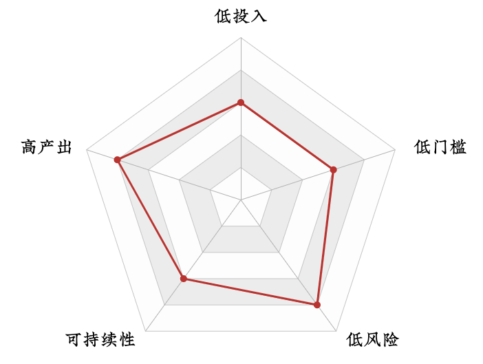
对于我们绝大部分程序员来讲，开发是自己的本职工作，所以都比较擅长。但是在做副业的时候，我们还不可避免地需要把自己的软件卖出去。而销售往往是我们的弱项，有没有一个办法让我们可以避免它呢？
答案就是应用商店。早期的应用商店是一个非常好的入口，它会分门别类的将软件陈列在上面，有需求的用户会通过分类浏览或者搜索查询的方式来安装或者购买。
但经过一段时间的发展，应用商店里边的软件已经越来越多，各种需求被满足得也越来越充分。
现在大部分的应用商店已经是红海市场，也就意味着说，即使你在应用商店上架了软件，也不等于其他的用户有机会看见它，因为软件实在是太太太多了。
所以，我们需要想办法在应用市场的应用海洋中获取流量。一般来讲免费获得流量的途径有两个。
关键字搜索
一个是通过关键字搜索。一般应用商店都会有搜索入口，用户输入关键字，商店则会列出匹配的应用列表。如果我们指定的关键字被搜得更多，那就更容易覆盖到更多的人群。
编辑推荐
另外一个途径是编辑推荐。一些看起来有创意、格调比较高的APP更容易被推荐。而同样功能但是界面不好看的应用，则很难被推荐。所以界面设计不光是用户体验的问题，甚至还直接影响我们的获客。
虽然现在应用市场很多，但是有强用户付费习惯的国内市场，其实也就是苹果商店，所以我们如果以挣钱为主要目标的话，就应该优先考虑苹果商店这个市场。Google 在国内没有商店业务，如果是面向全球市场的业务，可以上 Google Play。
下边来看看评分项。
低投入 ★★★
从投入上来说，如果你本身不是 iOS 开发者，又没有苹果电脑，那么可能需要为 iOS APP 开发购买一些硬件，同时苹果开发者还有一个至少 699 的开发者年费。
高产出 ★★★★
一旦进入市场某个分类排行前列，可以获得的流量还是很多的。
可持续性 ★★★
需要跟上操作系统的更新升级。应用市场会定期下架一些 SDK 版本过低的APP。大部分时候只重新编译就好了，但如果使用的一些库出现了兼容性问题，那么就需要有大量的维护工作了。
低风险 ★★★★
软件应用商店托管，数据同步可以用 iCloud 等，没什么特别风险。
低门槛 ★★★
对移动客户端的开发者来讲，基本上没有门槛。其他开发者要进入这个市场，需要学习移动开发技能。当然也有桌面应用市场，但数据比移动市场差很多。
精益副业
精益副业流程
商业模式画布
前边我们说到，在精益创业方法论里，有两个非常重要的假设，第一个就是「价值创建假设」。
因为不管是向用户销售软件还是在线服务，它本质上来讲其实是一种价值交换。也就是我们「给什么样的客户」「提供什么样的服务」，然后「收多少钱」的一个简单逻辑。
而围绕着价值的定义、创造和传播，我们可以使用一个非常棒的工具来描述它，这个工具叫做商业模式画布。商业模式听起来是一个很高大上的名词，但它具体化以后就很容易理解。
商业模式画布是以价值为中心的一张图，让我们把所有和价值相关的内容都放到上面，从而可以一目了然地纵观全局。
那下面，我们就来看一下商业模式画布是怎么围绕核心价值，一层一层建立起来的。
价值的定义
商业模式的核心，就是「价值主张」。也就是刚刚提过的，对谁，提供什么样的服务，收多少钱。

创造价值
定义好价值以后，我们会从两方面来考虑它。首先是如何把这个价值给创造出来；然后是如何把这个价值给销售出去。
在价值创造这边，我们可以把它细化为三个方面。

包括：
- 我们需要进行什么样的活动？这里的「活动」是「activity」，其实也可以叫做动作。
- 我们需要什么样的资源？
- 我们需要进行哪些合作？
销售价值
在价值销售这边呢，我们就要思考：
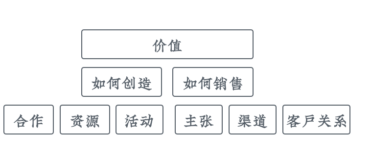
- 我们的价值主张定义得够不够好？
- 我们的渠道通路是不是足够的通畅，到达是不是有效？
- 我们的客户关系要怎么来建立和维系？
其实价值主张应该放到价值定义里边，但因为价值主张它直接涉及到了客户细分，又直接影响到了销售，所以我暂时把它放到销售这一边。
分层结构
按前面的描述，我们比较容易把商业模式画布当成一张图。但事实上，它其实更类似于Photoshop 软件中 的 PSD 文件，是分层的。其中每一层针对一个细分人群。
这主要是因为我们提出的价值主张，很难同时覆盖多个人群。同样的价值主张对一类人来讲可能是非常棒的东西；而对于另一类人来讲可能就毫无用处。
所以，我们提出价值主张之前，就需要进行客户细分，把我们的客户分成几类典型的角色，再针对每一类角色来提出更为具体、更有针对性的价值主张。
画布结构
下面我们就实际来看一下商业模式画布的布局。

在表格的最中间，就是我们的价值主张。在最右边，是客户细分。我们可以用不同颜色的文字，来代表不同的细分客户和针对他们的价值主张。
在价值主张表格的左边，是关于价值创造的区域，有「关键活动」、「关键资源」、「关键合作伙伴」；在价值主张表格的右边，是关于价值销售的区域，除了我们刚才已经说过的「客户细分」，还包含了「客户关系」和「渠道通路」。
表格的最下边一行，分成了两部分，左边是「成本构成」，右边是「收入来源」，它们都是根据我们上面的表格来进行计算的。一旦计算完，我们就可以预先知道这个项目做下来能不能挣钱，或者说挣钱的可能性有多大。
价值主张画布
在整个商业模式画布里边，「价值主张」和「客户细分」是最为基础、也最为关键的地方。如果价值主张没定义好，其他的做得再好也没有用。
所以，为了更好地进行价值主张设计，我们还有一张专门针对这两个部分的、更为详尽的「价值主张画布」。

上边这张图就是「价值主张画布」。它左边是「价值主张」，右边是「客户细分」。
客户细分
在「客户细分」这里，它更为详尽地描述了客户的情况。
这个圆分为三部分，最右侧描述了客户想要进行的工作、要完成的业务；下方是他在完成这些工作的时候所感受到的痛苦；上方是在完成工作后可以得到的收益。
价值主张
图左边的正方形就是我们的价值主张。可以看到，价值主张是针对需求提供的解决方案。比如：针对痛点，我们会提供「痛点缓释方案」，让客户在完成工作的过程中，没有那么痛苦；针对收益，提出「收益创造方案」，让收益变得更多。
在这两个方案的基础上，我们通过产品和服务的形式来将其落地，也就是正方形的左侧部分。
契合
大家可以注意到，在「客户细分」的圆形和「价值主张」的方形中间，有两个正对着的箭头，它表示「价值主张」和「客户细分」之间要达成契合。
因为我们会把整个客户群体分成多个细分群体，所以价值主张画布，它其实也是多份的。针对每一个细分的客户群体，都会有一张自己的价值主张画布。
最小可行产品和产品市场契合
上一节讲了如何通过商业模式画布来规划商业逻辑，但是「所有的战略和规划都是假设」，只有被验证以后的认知才是可靠、可信的。所以接下来，我们就需要用实验的方式来对它们进行验证。
通常，我们会采用「最小可行产品」（Minimum Viable Product，缩写为 MVP）来进行验证。
「最小可行产品」有两个关键词。一个是「可行」，它其实并不是指用户拿过去能用，而是指它可以很好地验证我们的假设。
另一个关键词是「最小」。它是说，除了验证所必需的功能以外，其他的功能都应该先不做。那些功能应该在验证完成之后再去添加，不然如果我们验证失败的话，功能就白做了。在我们的精力非常有限的情况下，这种浪费是非常可惜的。
严格意义上来讲，我们可以针对整个商业规划里边的每一个假设来做一个最小可行产品对其进行验证。但是我们的精力是有限的，所以通常只对核心假设通过MVP来验证。这个核心假设就是我们之前提到过的「价值创建假设」。
一旦这个假设被证实了，我们就认为我们找到了「产品和市场之间的契合」（Product-Market Fit，缩写为 PMF）。
具体而言，我们会在验证假设之前，定下一些量化的指标。在我们验证的时候，进行相应的衡量。最后根据指标的数据，来判断是否达到了 PMF。如果是，就可以进一步的增加功能，往前推进；如果不是，则需要调整，甚至需要通过战略转型来重新找到 PMF。
这种转型可以是针对原有市场的细分市场重新提出价值主张；也可能是扩大需求，让它支持更广泛的人群。但无论如何，在找到 PMF 之前，我们都应该专注于价值假设的验证，而不是功能的丰富和市场的推广。
精益独立开发实践
前面我们给大家介绍了精益副业的基本概念，因为只有理论，所以看起来可能比较抽象。
从这一章开始，我们就以实际的副业实践为例，看看如何使用精益副业流程贯穿始终，多快好省地发展副业。我们安排了两个深度实践，一个是独立开发、一个是网课。下边我们开始第一部分。
独立开发的精益流程

前面我们了解了精益创业的一些核心理念，接下来我们就在「独立开发」这个更为具体的副业活动中来看看如何应用精益流程。
这个流程和很多硅谷公司的产品流程很像，但是针对副业做了一些调整和优化。经过三年多时间的使用，我们自己用起来已经很顺手。
- 首先定义价值主张，然后围绕着价值来设计商业模式画布。
- 完成画布以后，我们把画布里的「客户细分」部分拿出来，做成「用户画像」。这是一个将细分客户具体化、变得有血有肉的工具
- 有了画像，再据此还原用户使用产品的各个场景，他们是用电脑还是用手机、是在家里还是在车上使用等等。
- 想象为了在上述场景下向用户传递价值，我们需要什么样的功能，这样就会得到一个功能列表
- 功能列表会很长，不同功能的优先级也不同。所以我们会对功能进行分期，其中最重要也是最靠前的一个功能分期，就是用来开发「最小可行产品」的分期。
- 当「最小可行产品」开发完成后，进行「产品市场契合」的验证，如果达不到设定的验证目标，就需要调整功能，甚至重新设计价值主张。
- 当通过「产品市场契合」后，我们就可以按照分期迭代开发产品的其他功能了。
- 在迭代过程中，我们会持续对新上线的部分功能进行增长优化，保证每一部分功能达到预定的目标。
以上就是我们为独立开发优化的精益流程，虽然讲起来比较多，但实际操作起来还是比较简单的。而且我们其实省略了不少大公司流程中的环节，比如用户访谈、焦点小组等。
下一节开始，我们将用一个具体的例子来讲解。
福利单词项目简介
先来介绍一下我们的实战项目 —— 福利单词。
它来自于我在学习过程中的一个原生需求。最开始我是使用 Anki 这个软件来背单词，软件很好用，但是每次都有一种逼着自己去背的感觉，背完以后如释重负。为了提醒自己不要逃避，我还定了一个闹钟每天催自己。
有一天，我又因为上Pixiv（一个二次元内容创作社区）看图忘记了时间。突然间我想到，能不能把背单词和看图片这两个行为绑定到一起呢？
你看，背单词虽然有用，但让我痛苦，度日如年；看图片很欢乐，流连忘返，但似乎不是很「有用」。如果我们把两者结合到一起，一边看图一边背单词，是不是就可以让背单词不那么难受，可以持续不断地背下去了？
这就是福利单词的出发点。
接下来，我们就来看看，怎么从这个还有些模糊的想法中提出一个明确的价值主张，然后围绕它进行商业模式规划、功能和界面设计、验证和迭代开发，最终使其成为一个商业产品。
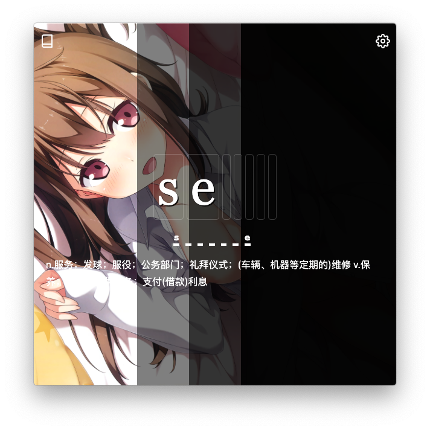
需要说明的是，开发过程很难在有限的篇幅中讲解清楚，也偏离了本书的主题，所以我们只会简略地提及一些需要注意的地方，并不会进行开发的教学。
福利单词的商业模式画布
前边我们已经讲解过商业模式画布，这一节我们就以「福利单词」为例，来看看怎么使用。
价值主张
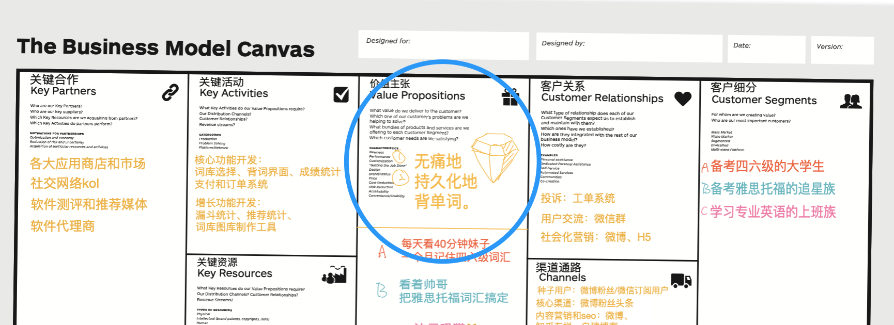
首先来看一下价值主张。它的核心价值就是，让那些觉得学习起来很痛苦的人不那么痛苦，给一点糖，让其可以持续地、无痛地学习下去。它试图给学习过程添加一些乐趣来综合不是那么爱学习的人的痛苦，从而把一个短暂的、难以忍受的学习行为变成一个可以持续忍受、甚至通过习惯驱动可以持久化的行为。
所以我们在「价值主张」这一栏上写上两个关键字，一个叫「无痛学习」，一个叫「持久化的学习」，这是这个产品最核心的两个「价值主张」。
有了这个价值，我们就能帮助客户完成很多以前想学、但是因为各种原因没有办法学下去的东西，从而实现其个人成长和提升。
客户细分
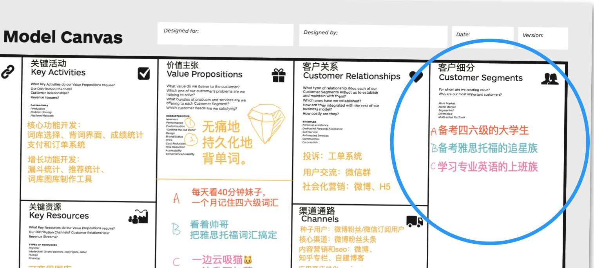
如果要具体化价值主张，就要来看客户细分。
因为是单词学习软件，所以客户群体往往还是跟学习英文需求相关的。具体划分下来，我觉得可以分成三大类。
- 第一类是在学校要考英语四级或者六级的大学生。
- 第二类是有留学或者移民需求，需要考雅思、托福的群体。
- 第三类是需要专业英语来提升自己在职场的业务能力的上班族。
前两类群体是要备考应试的，后一类则更注重实用能力的提升。从学习的内容上来讲，只是题库的不同。所以如果我们的软件支持了「词库切换」或者「自定义词库」功能，就可以比较容易地覆盖他们的学习需求了。
价值主张的细化

光是「有词库，你来背」这个主张和其他背单词软件并没有什么不同，所以我们需要在「价值主张」里再加上「糖」。
但是，对于不同的群体来讲，「糖」是不一样的。如果只是放一些二次元的萌妹子，只有喜欢动漫的人会觉得这是他们的「糖」，可以吸引着他们，每天都来看一看。对于其他一些二次元无感的人群来讲，这些图就毫无吸引力，于是我们需要增加「糖」的种类。
比方说有的妹子就喜欢看帅哥、有的粉丝就喜欢看偶像、有的铲屎官就喜欢看猫猫狗狗、有的吃货就喜欢看肉和甜点。这一部分，我们可以用多图库的方式来满足。
于是，针对不同的客户细分，我们提出三个更为细化的价值主张：
- 「每天看40分钟妹子，一个月记住四六级词汇」
- 「看着帅哥，把雅思托福词汇搞定」
- 「一边云吸猫一边升职加薪」
现在听起来是不是就有吸引力多了？
渠道通路
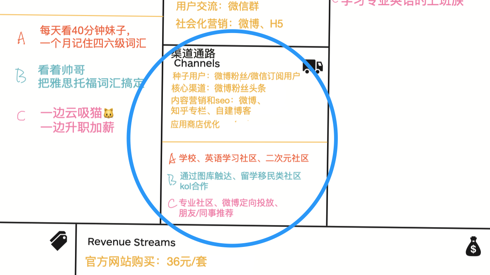
在「渠道通路」的这个方格里面呢，我们的种子用户主要由微博带过来的流量构成。
通过种子用户进行测试，一旦转化率达标，我们就可以开始对外去做一些合作，以及以微博为起点投放广告，观察广告投放的成本和其带来的流量的关系，以此判断下一步操作。
客户关系

在「客户关系」这里，我们会通过腾讯提供的「兔小巢」这个产品来提供售后支持。它是类似于反馈板的免费工具。用户在上面提交问题，我们会收到微信或者QQ的通知，可以通过网页在电脑上或者手机上进行答复。
关键活动
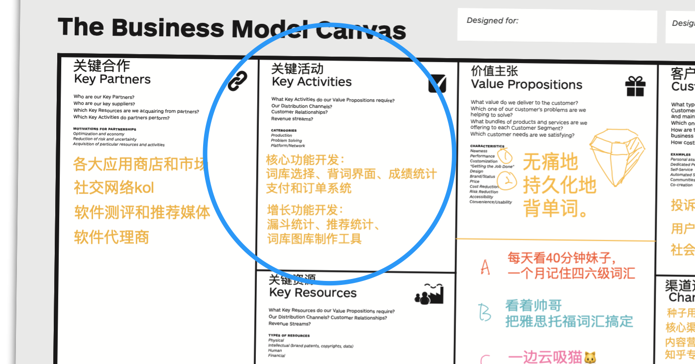
接下来我们来看一下「关键活动」。
用来验证需求的最小可行产品（MVP），是一个简单网页，只包含 100 个单词、100 张图片和简单的输入文字切换图片功能即可。我们还需要一个统计数据，看看每一个访客到底背了多少个单词。这关系到我们价值主张里的「无痛」和「持久」。
当这个价值被验证后，就可以进入第一期开发。
虽然是一个全平台应用，我们第一期却只做网页版。具体业务包括：背单词的界面，以及选择词库的界面。这是最核心的业务功能。如果我们第一期想要有收入，那么就需要支付和订单系统。
为了对转化过程进行分析、更好地挣钱，我们还需要开发一个2A3R漏斗的统计，让用户从获客层顺利滑入付费层。如果需要通过分享裂变获取更多流量，我们也需要统计发起分享的用户数据。如果要允许用户自定义词库，我们就要提供对应的制作工具。
以上这些，构成了我们的关键活动。关键活动可以采用不同颜色的文字来标记不同的分期，也可以一期一期追加。
关键资源

在关键资源上，除了需要具备人、钱和时间以外，我们这个项目还有特有的资源需要考虑，那就是背单词所用的图片，这是一个非常值得注意的问题。
在最小可用产品中，因为不涉及到收费，我们可以使用的图片很多。一旦开始收费，如果还是不加识别地从网上下载各种版权不明的图片，放到自己软件里并以收费的方式进行售卖，很可能会出现侵权。
所以，我们就需要思考图片资源的解决方案。粗略分析后，有以下几种思路：
- 作者授权
- 换用无版权图片
- 用户自行提供图片
作者授权
直接找作者把图片买下来，然后作为付费词库卖给用户，这是最直接的方式。但有问题，那就是价格，光是大一点的词库就有超过一万个单词，也就是说我们要买一万多张图。如果按一张图 50 元计算，需要 50 万的投入。
在一分钱都还没挣之前就做出这么大的投入，风险还是很高的。这种方式更适合我们挣到钱以后，在扩大规模时使用。
换用无版权图片
当然，我们也可以寻找无版权的图片来做图库。这样即使我们打包在软件里进行商业销售也不会有任何问题。互联网上已经有比较庞大的无版权高清图库了，比如 Unsplash 等。不过这些图库主要是风景和动物，人物类非常少。
用户自行提供图片
本质而言，我们卖的是「看图背词」的工具，而不是图片本身。现在之所以在版权上有风险，是因为打包导致的。所以我们可以尝试着将付费的服务和免费的图片分离开。
比如我们可以给用户提供自定义图库的制作工具，让他们把自己收藏的图片导入进去。这样既能达到目的，又没有版权上的风险。
类似需要考虑的，还有背单词时用到的音频。最简单粗暴的方式是使用云平台的TTS（文字转语音）接口直接生成。
成本收益

在填好这几个格子以后，我们就可以开始对成本和收益进行相应的预估，算出预期利润区间。
由于我们开发的项目相对比较小，用到的资源也不是特别的多，所以商业模式画布做得还不算细致。不过通常来讲，第一版的商业模式，画布本身也不会特别细。它是随着项目的进展不断被细化的。
最后我们来看看完整的商业模式画布：

通过用户画像细化客户
什么是用户画像
在商业模式画布里面，我们对客户进行了细分，把客户分成了不同的组，每一组代表一个独立的需求。
用户画像（persona）呢，就是给这些已经分好的组，每一组搞一个人设、建一个虚拟形象，让其变得有血有肉、有姓名有年龄有性别、有自己的身份有自己的爱好、有使用产品的场景。
这样当我们聊到这个用户画像的时候，就像在讲自己的朋友、同事一般熟悉的人一样。
把抽象的需求变成活灵活现的人，这样我们在进行产品设计的时候，就更容易还原到场景，带着画面去想象这个人的需求和行动，这就是用户画像的意义。
福利单词的用户画像
接下来，我们就在福利单词的客户细分基础上，为每一类客户建立用户画像。
四六级备考生
首先是备考四六级的大学生这个细分客户群。我们叫他王小康，设定为一个大三的男生。他现在有一个迫切的任务，就是一定要通过四级考试。这位同学是一个动漫宅，他喜欢看的图就是二次元的萌妹子。
留学移民预备军
然后我们来给有留学移民需求、需要考雅思和托福的人群做一个用户画像。我们叫她章小留，她是一个大学刚毕业一年的女生，现在有出国留学的想法，正在准备雅思考试。这位同学是追星族，喜欢看的图片是韩国帅哥。
专业提升小白领
第三个细分人群的用户画像，我们叫她卢小白，是一个毕业两年左右的女生。在生物公司从事技术相关的工作，她需要尽快熟悉大量的生物专业方向的英文单词，方便她更好地了解公司业务。她家里有猫，喜欢看的图片是萌宠和美食。
确定了这三个用户画像的基本资料以后，我们会给他们配上头像，写上他们的需求关键字，把它整理到一页A4纸上。
这样我们就可以把它打印出来，贴到墙上，在做产品设计的时候可以随时去看他们，就像看着我们身边的熟人一样。
画像的头像制作
很多书里面都强调说，用户画像的头像要尽可能真实，最好用真人头像。但需要注意在网上乱找真人头像容易导致肖像权问题，这里给大家推荐一个通过AI生成真人头像的网站，叫做 thispersondoesnotexist.com。

不过这个网站生成的多是欧美人，对国内的产品来讲，反而各种违和。我更喜欢使用日系的动漫捏脸网站来做，比如 charat.me 这个网站。

最终的用户画像
有了头像，再配上角色的说明和需求关键字，我们就有了一个简单好用的用户画像。下边是我们制作好的三个画像：
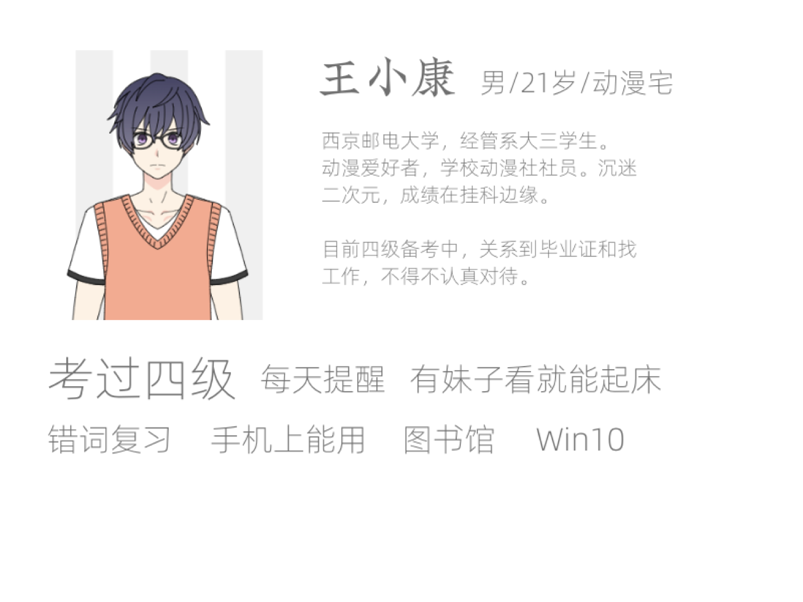


画像→场景→功能和分期
使用场景分析
有了栩栩如生的用户画像，我们就可以从画像想象出场景，再由场景梳理出功能列表并进行分期。下边我们就具体来看下怎么分析使用场景。
王小康的使用场景分析
首先是王小康的使用场景，包括在学生宿舍、在图书馆以及在课堂上。
在宿舍，他每天晚上八点到九点使用台式机。因为宿舍比较吵，他会戴着耳机学习。这时候他使用的是外接键盘。
晚上睡觉之前，他还会窝在被窝里玩一会儿手机，时间大概是晚上十一点半到十二点，也就是睡觉前的半个小时，这时候的使用场景就是用手机背单词。
图书馆也是一个典型场景，因为在这个环境里边，需要保持安静。所以你要么戴耳机，要么将设备调成静音。王小康一般是下午三点到五点去图书馆自习，这个时候他使用的是笔记本电脑和 iPad 。
需要注意的是使用 iPad 的时候是没有键盘的，所以在输入上面没有使用外接键盘方便，整体输入速度会下降很多。
图书馆和学生宿舍是两个相当不同的场景。宿舍里很可能有室友在玩游戏或者聊天，很容易分心，甚至连背单词这件事都很容易忘掉，所以我们需要有提醒。
相对而言，图书馆就是安静的沉浸式环境，没有人来打扰你，大家都在忙着学自己的东西。
章小留的使用场景分析
下面我们来做章小留的场景分析。
她现在辞职在家，完全是备考的状态。每天上午会在家学网课、或者去线下的培训班学习，下午会在家学词汇。晚上的话，可能要看韩剧。
主要场景在学词汇的下午。因为是在家里边，她使用的是台式机，鼠标和键盘都是外接的。每天早上起床的时候可能也需要复习一下。
所以她的两个主要使用场景是使用电脑学习，以及早上起床时用手机进行复习。
实际上，这个场景和王小康在晚上用手机复习的场景非常类似，可以都写上，最后进行功能合并时，重复的内容会被合并掉。
同时，因为这两个用户都是在备考，所以他们其实还有「考试复习」这个特殊场景。
在这个场景里，它的词库是有范围的，不一定是整个词库。而背单词的时候，需要有一个考试模式，限时答题，并给出得分。这些需求我们不一定都要通过福利单词这个产品来满足，但可以先写下来。
卢小白的使用场景分析
小白是上班族，所以学习时间是非常有限的，主要是在上下班通勤的时候学习，以及在周末的时候有一点空余时间。
通勤场景一般会在地铁上。运气好的时候就有座位，运气不好的时候还需要站立着。这时候她会使用手机和耳机来学习。
因为她的词汇学习主要是为了工作需要，所以在工作的时候可能还会有查词的需求，可以通过词典软件解决，但是她可能会想把生词加入到福利单词来记忆。
大部分时间地铁里是很挤的，有时候需要一个手扶住上面的吊环或者旁边的柱子，所以小白可能需要单手操作。
另外要意识到小白只是一个典型代表，她需要的是生物类的词汇，但是其他的上班族需要的词汇可能会覆盖各行各业，这部分的词库需要通过自定义词库来解决。
同时，小白很喜欢宠物，当她看见可爱的喵星人时，很可能希望将这个图片保存到相册。这里如果再结合到我们上面的考试模式的话，其实可以做得更游戏化一些。比如说我们可以加入一个图鉴，就是一个画册，里边有每一个单词对应的图。只有你对这个单词达到一定的熟练度以后，才能在里边看见。大体上这就是小白的使用场景。
从场景到功能
现在我们三个用户画像的使用场景已经分析完了。接下来，我们就可以根据场景来确定功能了。也就是说，为了满足这些场景下的需求，我们在产品上需要提供哪些功能来支撑。
在确定功能的时候，有两类需要特别注意。一类是核心功能，没有它，所有画像都没法使用我们的产品。另一类是边界功能，没有它，某一个画像就没法使用我们的产品。核心功能是交集、边界功能是并集。
我们会根据画像的设定，将一些边界功能分配给他们。比如说，为什么卢小白她就会想保存图片到相册，章小留就不会呢？事实上章小留也会，但我们不需要把一个边界功能重复分配，因为最终都会覆盖到。
画像需要注意的是它特有的场景，比如考试模式是备考生的特有场景。对于不考试的同学来说有没有都无所谓，但是对考试的同学是非常有用的。
我们把边界功能标记出来以后，就可以框定一个大体的功能范围。
比如说，章小留使用的是苹果台式机，这就要PC版需要同时支持 Windows 和 Mac 两个操作系统。路小白上下班通勤的时候是单手操作，我们在手机上设计浮动键盘时，就要考虑到小屏幕手机上26键的全键盘单手时容易按错的问题。
对于卢小白来讲，她的空余时间不多，所以可能还会利用家务和健身的时间，这个时候如果她想复习单词，可能还有一个语音播报的需求。
章小留是追星族，那她在网上看韩剧的时候，会顺便把喜欢的偶像的图片给保存下来，制作成词库，甚至还会分享给同好。
这些都是边界功能。在早期设计的时候，可以先不考虑工期、开发量这些很现实的问题，我们可以先把它放进来思考，至于做不做、什么时候做，那是以后的事情。
我们要做的东西在早期应该尽可能的少，但是思考的范围却应该尽可能的广。我们是把很多东西都想明白了以后，选其中最核心的、最重要的来做。而不是说很多东西我压根就不想，只做眼前看到的那一丁点就开始做了。这样到项目中期，就会出现很多思考上的盲点，这些盲点甚至会导致我们的项目重做，所以需要尽可能避免。
通过思维导图梳理功能
我们可以通过思维导图软件来梳理功能。
想象一下新用户从什么地方开始使用我们的软件，跟着他的使用流程来同步构建功能。
比如说，首先会需要有一个用户系统，这样我们才能识别用户。接着我们肯定需要有词库，不然就没有单词可以背了。我们肯定也需要有单词的背诵、管理，如果我们要收费的话，肯定还需要有支付。
用户系统里边，我们考虑使用微信登入，这是目前最简单的办法，不用做用户系统、也不用做密码找回。有了登入肯定也得有退出。
有了用户系统以后我们就可以保存用户背单词的进度了。在词库这边呢，既然我们要做一个可切换和自定义的词库，那肯定会有一个列表。
这个列表，首先是会有一个官方的或者叫内置的，然后我们在建立一个本地的列表，给自定义词库用的。
自定义词库这边，我们可能还需要给提供一个工具来制作词库。我们需要有一个单词表、需要生成对应的音频、需要有对应的解释，以及我们背单词的时候看的图片。这是词库的大体功能。
如果我们要做图鉴的话，就需要有词库的完成度数据。就是用户背了词库里面百分之多少的单词、以及对每一个单词的熟练度。在这个基础上我们还需要有一个相册，用来欣赏高清图片。
自定义词库制作完成以后，它还需要有一个分享方式。我们可以允许用户通过二维码分享，其他的用户通过二维码扫码导入。
接下来，我们来看背单词的功能。
首先它需要有一个地方来输入字母，我们会根据输入的字母动态地进行遮罩的调整。然后我们需要把用户输入的时间或者错误的次数统计起来，这代表着对这个单词的熟练程度。我们也还需要有一些辅助按钮，用来显示单词的意思、以及跳过不会的单词。
在最后，当正确地输入了单词以后，我们需要显示一个高清图片，让用户可以很完整地看见这张图片，这是对其的奖励。
另外我们也需要把用户的背单词成绩记录下来，为了能更清楚地看见这个成绩，可能还需要提供一个进度统计，告诉用户背了词库里面的百分之多少，各自的熟练度是多少。
还有支付部分别忘了。首先我们要显示可以付费的商品，当点击购买按钮以后，要把微信支付给呼叫起来。在微信支付完成以后，要进行确认。同时我们也需要维护一个订单列表来进行售后和退款。
分期
确定好功能表以后，接下来就可以进行分期了。
功能分期
因为我们现在的功能实际上已经非常多了，必须要把它分成不同的阶段来做。最小可行产品不太典型，这里我们以 PMF 验证完成后的第一个版本为例，来选择第一期的内容。第二期就是「以后再做」的功能，第三期就是「不知道啥时候做」的功能。
来看我们的功能列表：
- 推送提醒：可以放到第一期。但为了实现推送，需要有消息系统。如果要做定时提醒的话，还需要做设置界面。因为用户设置过提醒以后，可能有一天不需要了，要能及时取消，不然天天推送还挺烦人的。
- 考试模式：放到第二期。虽然对备考生很重要，但是因为整个开发量比较大，在挣钱之前可以先不做。
- 虚拟键盘：放到第一期。为了支持单手操作，我们需要给背单词的界面添加在移动设备上的键盘界面。不同输入法的键盘可能会导致兼容性问题，所以我们直接通过一个虚拟键盘来解决它。
- 自定义词库分享：放到第二期。
- 图鉴模式：放到第二期，也可能是第三期。
- 语音回放：放到第二期。

确定分期的时候，也要同时检查功能点是否都对应上了。比如支付里面，我们需要把「微信支付的对接」加上。
功能归类到界面
确定好某一期的功能列表后，可以把各个功能归类到界面里。新建一个思维导图，写上显而易见的各个界面，然后把功能放到界面下去。
如果发现有功能没有界面放，恭喜你提前发现了做丢的界面，赶紧把这个界面也加进去吧。
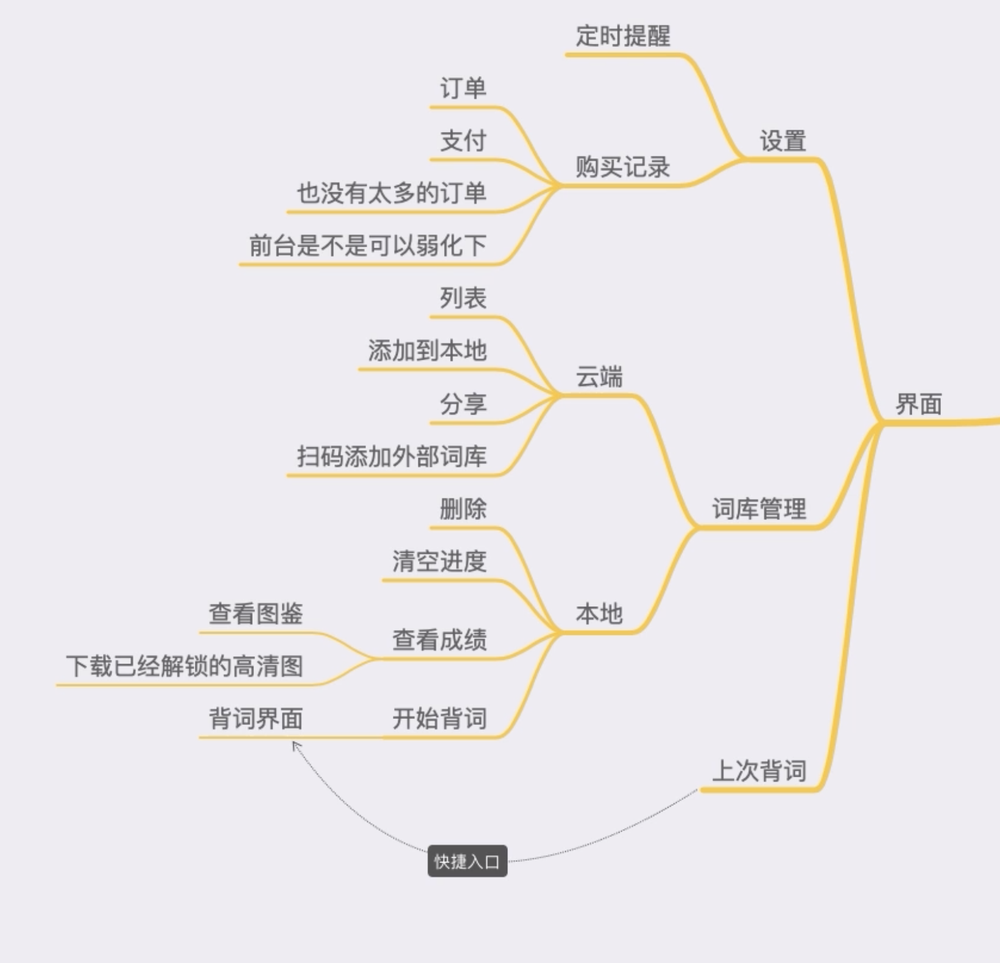
这一步完成以后，我们就可以开始进入设计阶段了。
什么是好的商业设计
这一节开始我们会讲一些设计方面的东西。和专业的设计课不同，我们主要着眼于如何让非专业设计人员也能做出七十到八十分的设计。
首先我们来和大家聊一聊，什么是好的商业设计。
好设计的标准
要做好一件事，首先要弄明白好的标准是什么，而这恰恰是讨论设计时的一个难点。
为什么呢？
我们写程序做软件，好不好是有一个相对可以量化的指标的。比如：用了多少行代码，执行了多久时间，占用了多少内存、在一秒以内可以承受的并发请求数是多少。这些都可以很精确地衡量出一个程序是否写得好。
但是，对于设计来讲，它是一个很个人化的东西。同样一个设计，有的人会觉得它好，有的人会觉得它不好，还没法说谁对谁错。甚至有一些艺术家，他的作品可能在当时就没有人能够理解，隔了很多年大家又把它拿出来，才发现惊为天人。
这就造成了一个问题，设计到底应该按什么样的标准去衡量？不光是设计师本身需要思考这个问题，设计需求的提供方其实也需要去思考。
商业设计
但是后来我们发现，如果把设计的范围给缩小一些，就可能得出一个部分适用的答案。
艺术这个东西它确实是千人千面的，因个人的感受而异。但是我们为商业产品做的设计它并不等价于艺术，大部分情况下它是为商业服务的，我们就叫它「商业设计」吧。
一个好的商业设计，其实就是要让尽可能多的客户喜欢它。因为，喜欢上我们设计的人，很可能也会喜欢上我们的品牌和产品，最终转变成商业价值。
至于这个设计在艺术上深刻不深刻，完全是另外一个领域的事情。
这里有一个比较极端、但大家也很熟悉的例子，那就是椰树椰汁的产品设计。它基本上是把美感给扔了，但换取了很好的识别度，这就是一种商业上的权衡。
我们写程序的时候，要从代码思维上走出来，回到商业思维的角度上来；我们做设计的时候也要从设计本身走出来，从整个商业链条的角度去思考。
通常来讲，我们会面临的抉择，往往是在两类截然不同的设计之间。一类剑走偏锋、足够深刻，能理解它的一类人特别地喜欢，而不理解的又特别讨厌它；另一类设计，看似中庸，然而平中见奇，不同层次的人都可以看到自己喜欢的点。
如果这个设计要拿去参加艺术大赛，可能前者更合适。但如果用于商业产品，那我觉得应该选择后者。因为归根结底，它是用来承载功能、向客户传递品牌质感的，而不是要体现它自身有多深刻，那样反而喧宾夺主了。
简洁即美
每个人的兴趣和爱好都是不同的，要做一个设计或者塑造一种风格，让绝大部分人都喜欢上是很难的。但我们幸运的发现，设计如果足够简洁的话，就不容易包含太多触发各种反感的点，更容易获得绝大部分人的喜爱。
而对于副业来讲，简洁风格的方案所需要的设计和开发资源都相对较少，配合起来又比较容易协调，所以简洁风格是我们的首选。
人人能用的四大原则
界面设计是很多尝试自己开发完整产品的程序员非常痛苦的事情。很多时候，如果我们去问设计师，很多人虽然会设计，却讲不出背后的道理。只会说，「这样做感觉上更好一些」，「这就是经验/灵感」。
我以前也是这么认为的，直到读了一本书才明白，原来界面设计背后一样是有规律的。
界面的表层结构展现的正是它内部的逻辑。
一个界面上应该摆放哪些控件，哪几个应该离得近，哪几个应该离得远，哪些应该用同样的风格，哪些又应该区别开来，这些都源于它背后严密的逻辑关系，而不是因为设计师的一时兴起。
那本书就是《写给大家看的设计书》。在书里，作者提出了界面排版的四个基本原则，通过活用这四个原则，我们就能够把界面设计得美观大方。
这四个原则分别是「重复」，「对比」，「对齐」和「亲密性」。
- 「重复」原则强调「一致性」，它说的是「在逻辑上一致的物件，在视觉上也应该一致」。
- 「对比」原则强调「层次感]，它说的是「逻辑上不同的物件，在视觉上也应该不同」。所以我们要想办法拉出距离来。
- 「对齐」原则强调的是「安定感」。均匀的留白能够营造出一种稳定的感觉。这正是产品质感的一种潜意识渗透。对齐虽然是很小的细节，但是如果处理不好，很容易会破坏产品整体质感，而且会给有强迫症的朋友带来莫大的压力。
- 「亲密性」原则，强调区块的关系，它说的是「逻辑上存在很近的关系，那么这个关系也应该表现在视觉上」。相关的项应该彼此靠近，不相关的项应该彼此远离。
书里有非常详尽的介绍和让人顿悟的例子，建议大家都去阅读下原书。

四大原则回答了常见的一些界面问题。比如说，上图中，白色方块之间的间距为什么不能比第一个方块和页面边界的距离大。
如果从纯感性的角度来讲，可能会说「这样放不好看」。但是如果通过亲密性原则来思考的话，我们会发现在逻辑上，相对于页面边框，白色方块是一个整体。一个白色方块和另一个方块的关系，显然比它和页面边框近。所以这种深层关系表现在视觉上，就是它们之间的边距差异。
如果视觉关系和逻辑关系不一致，我们就会觉得「别扭」、「不直观」。这些原则为我们通过逻辑理解设计推开了一扇门，让之前仅存于「感觉」和「经验」的设计技巧变得有章可循。熟悉它们以后，只要多加练习，再配合上一些简洁、清爽风格的设计细节，我们就可以在大部分场景下做出七十到八十分的界面来。
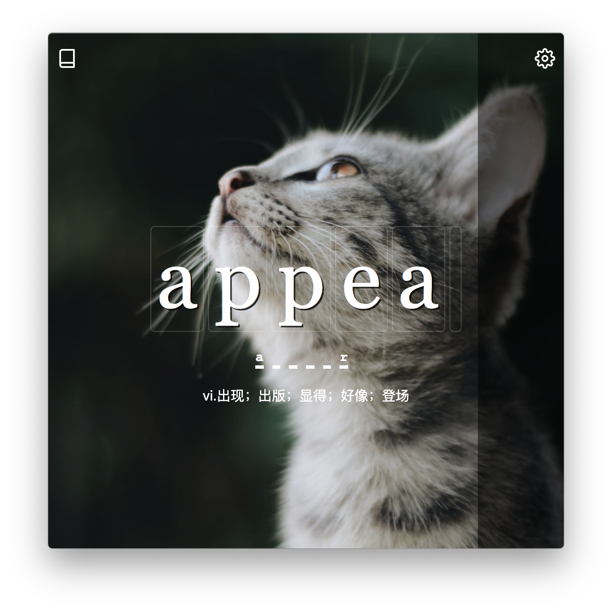
独特Logo解决方案
接下来讲下，如何设计产品的 Logo 。
为什么要自己设计 Logo
最简单的方式当然是请设计师来设计，我们只需要像产品经理那样在背后指指点点，改需求、当甲方就好了。但是，在做副业时，我们很可能没有足够的预算去雇佣专业的设计师。尤其是在软件还没有获得收益之前，如果花很多钱去请设计师设计，而产品本身又运营不起来的话，钱就白花了。
所以，学会自己做一些比较简单能用的 Logo 还是很重要的。等以后挣钱了，可以再花大钱请高手来重新设计。
通过矢量软件绘制 Logo
Logo 的设计还是有些考验绘画能力的，即使是相对简单的简笔画，对于很多没画过图的程序员来讲，也挺难绘制一个像样的出来。
如果你有一定的绘画基础，或者想发掘自己隐藏的天赋，那么我特别建议大家用矢量软件来绘制，对于像我这样手残的同学来讲特别有用。
我最开始画 Logo ，是给自己的开源项目。刚开始使用的是像素绘图软件。由于缺乏练习，即使使用数位屏，也很难绘制出光滑的线条。即使偶尔画出来了，要调整它时，又会花费大量的时间。
后来我发现了矢量绘图软件，在它里边，我们绘制的其实不是线条，而是一个个形状。线条是我们指定的形状的边界，可以通过描边自动生成。最棒的一点是，当我们改变形状时，线条就自动随之变动，无需再重新绘制。
只要熟悉了形状的画法，我们就可以通过矢量绘图软件来绘制一些简单的、线条光滑饱满的图案了。
作为对比，上图左边是我用像素绘图软件绘制的头像，右边是后来我用一个周末学习完矢量绘图软件后花一天时间重新绘制的。真的是好用太多了。
免费和开放的矢量资源
当然，不是所有同学都有时间和精力去学习绘图的，所以我们还是回到适合更多人的方案上来。首先，我们可以使用网上的开源矢量资源。最近两年开始出现一些视觉效果非常不错的矢量插图网站。

比如 unDraw，它就提供大量的适合互联网和软件场景的开源矢量插图。更贴心的是，在网站右上角还提供了颜色按钮，通过调整颜色，我们可以得到和自己产品风格更为统一的矢量图。
一个需要注意的地方是，如果使用免费素材，一定要留意不要从国内那些没有注明作者和授权的网站上下载。因为这些来历不明的素材很可能给你带来版权风险，说不定哪天巨额索赔就找上你了。
购买付费素材
如果没有好的免费备选，或者没有太多时间去各个网站上挑，我们还可以通过购买的方式来获取素材。

在购买素材的时候，要注意使用的限制。有的网站的素材是会限制使用的项目数、域名、甚至媒体类型的。我推荐大家优先购买采用「royalty-free」许可的网站。这种许可非常开放，往往只要付费就可以永久使用。
提供付费矢量图标的网站比较多，比如 flaticon.com ，thenounproject.com 都是比较有名的。我个人一直订阅的是后者，提供的图标够多，价格也比较便宜。它还提供了一个电脑客户端，可以很方便的搜索、复制粘贴图标文件。
这个网站目前提供的图标都是没有颜色的。当然这一点可能对我们来讲，并没有太大的影响。为什么呢，因为直接使用这些网站上的图标做 Logo ，会带来一个潜在的问题。
将付费素材变成独有的
这种买断式授权的素材非常好用，但是既然我们可以花很少的钱来买这个设计，那同样的，其他人也可以来买这个设计拿去使用。正如许可中指出的，这种许可是非排他的。
如果这些图标只是用到界面上，多个应用之间相似甚至相同，可能还是好事，因为这降低了用户的学习成本。但如果用在 Logo 这种代表品牌的场景，就会出现多个应用 Logo 一样的尴尬场面。
只是从这种买断式素材网站上直接买一个素材就拿过来把它作为 Logo，那人家也可以从这个素材网站上买同样的素材作为它的 Logo。这种行为可能是无意的，也可能是有意的。这种情况下我们还不能说人家抄袭侵权，因为都是从同一个地方买的，你可以买，人家当然也可以买。除非你把这个图案拿去抢先注册了商标，否则就会存在潜在风险。
不过，我们可以通过混搭组合的方式，将 Logo 变得独一无二、且更贴近我们产品的本质。
你看，thenounproject.com 上有上百万的图标。我们单独使用，总有其他的用户和我们一样喜欢上某一个图标，并把它作为 Logo，这个时候我们两个产品就冲突了。
但是如果我们把这几百万的图标混搭组合起来，就会产生出上亿种组合，再要想重复，就变得非常困难了。而「从一个图案里边截取一部分，跟其他的地方拼合起来，构成一个新图案」的这种操作，即使对于一个没有绘画功底的同学来讲，只要能熟练地使用软件，也可以轻易完成。
另外，在增加识别度方面，除了混搭，还可以通过上色来实现。单色图标因为使用的颜色数少，往往比较单薄，看起来缺乏层次感。当我们把它作为产品 Logo 的时候，可能就不是那么耐看。这时候我们可以自己来给它上色。因为是矢量图标，所以调色和上色都非常简单。调色只要选中后改变线或者形状的颜色就可以。
使用AdobeXD设计界面
什么是 Adobe XD

Adobe XD是由 Adobe 开发的矢量设计工具，它和 Sketch 类似，既可以用来绘制矢量界面，又包含原型设计功能，还可以在手机上预览设计好的界面。XD 支持 Windows 和 Mac，是 Adobe 为数不多的可以免费使用的软件（当然你可以付费升级 pro 版本）。
使用 Adobe XD 设计简单界面
软件的使用主要还是靠大家勤学多练，这里我们和大家演示下如何用它来设计背单词界面。
理解画板
首先，我们在 XD 里新建一个画板（art board）。
画板是什么？它相当于 Word 里边的页面。一般的纯设计工具没有画板这个概念，但 XD 也包含了原型功能，有时候我们需要在多个界面之间来回切换，而一个画板往往就是一个界面。
点击左侧的菜单里面倒数第2个画板的按钮
，这时候在屏幕最右边就会出来一系列预置的画板尺寸。

它已经帮我们准备好了常用的规格，比如苹果的iPhone、iPad，谷歌的安卓机型，以及网页常见的尺寸。
我们只要从里边选择对应的尺寸就好了，当然也可以不选择它给你预置的，直接手工拖拽来画或者在属性里面调整画板的宽和高。那我们就新建一个iPhone Xs尺寸的画板好了。
然后按住 CTRL或者CMD + D，就可以直接复制画板。我们把第一个画板叫做背单词界面，然后开始设计。
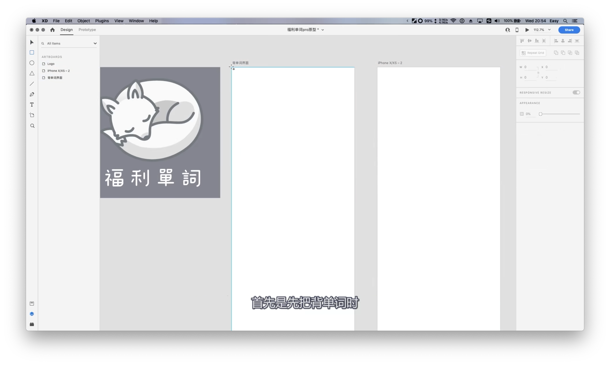
遮罩的制作
先来制作背单词时，字母没有输入完时显示的遮罩效果。选择左侧工具栏中的矩形 
工具，画出一个覆盖全部画板的长方形。然后调节填充颜色为黑色，透明度为 30%。

然后我们到 unsplash.com 这个无版权网站上，找一只猫的图片，把它也放进来。

这时候猫是在遮罩上方的，所以它挡住了遮罩。

点击右键，选择「Send to back」将它放到遮罩后，我们就可以看到被半透明遮罩挡住的猫了。
单词释义和输入框
接下来，在遮罩上边，我们来放上单词释义和输入框。点击最左侧工具栏中的 
图标，切换到文字工具。
然后输入文字释义。

在右侧的属性面板里，我们可以调节文字的字体、大小、颜色和对齐。
然后我们放上之前设计好的 Logo，加上单词输入框。

注意这个输入框不一定非要是「框」，比如我们这里也可以把它做成下划线。
虚拟键盘

虚拟键盘的制作在 XD 中也很简单，直接用矩形工具绘制就行。需要注意的是圆角的做法。

其实很简单，在右侧的属性设置里边，把圆角从0 改为 5 就可以了。在做好一个按钮后，我们可以按住 Shift 同时选中按钮和上边的文字，在右键菜单中将其编组（Group）；然后按 CTRL或者CMD + D 就可以复制按钮。

当按钮多起来之后，要对齐它们还挺费事的。其实选中多个按钮后，可以在菜单 Object → Align 中来自动对齐；也可以在 Object → Distribute 中让它们自动均匀分布。
矢量图标
再下来，我们需要在界面中引入图标。既然是矢量界面，当然是矢量图标最好。前边我们已经介绍过 thenounproject.com 了，它还为 pro 用户提供了一个客户端。在这个客户端里边可以非常方便的复制图标。

当我们通过关键字搜索到图标后，可以通过下载并将其拖拽到 XD 的方式引入；也可以直接在客户端中右键选择 Copy as SVG，然后直接粘贴。因为是 SVG 格式，调整完大小后可以很方便地更换颜色。
最后我们再微调一下输入框和单词释义的位置，背单词界面就做完了。其他界面的制作非常类似，就不在这里累述了。
个人支付解决方案
略过开发环节，我们来讲讲变现。绝大部分的支付方案都是面向企业的，面向个人的正规支付方案非常少。那么对于没注册公司的个人，怎么样才能比较安全地收款呢？
常见的几种个人收款方式
个人收款码
市面上最简单粗暴的个人收款方案，就是利用微信或者支付宝的个人收款码来做。
具体的说，就是生成一张二维码，在这个二维码上面添加一个付款的备注，让用户备注中补充上特定的消息后（比如订单号）支付。当完成支付以后，我们就会通过APP或者网站，得到备注里面填的消息，通过识别，我们就能定位到订单，从而自动发货。也有不用备注，用支付金额来识别的。
这个方式淘宝店家已经用了很多年，它的问题就在于，从用户端的体验来讲，它需要填写额外的消息或者发送不确定的金额。从商家端的体验来讲，它需要有一个常驻的服务，随时去监测收款的相关消息，这就会有相当的不稳定因素在里边。
二次封装接口
另一种解决方案，就是由那些有资质的企业申请到接口权限后，二次封装后提供给个人来用。这种方案的问题在于，钱是支付给提供接口的企业的，我们只能定期找他们结算提款。万一对方跑路了，我们的钱也就没了。这种方式风险非常高，不推荐。
小微商户
「小微商户」是支付平台针对个人、也就是大量没有企业资质的用户推出的一个解决方案。最开始推出的时候，是为了帮助一些线下的店面，快捷地接入支付而存在的一个服务，然后又扩展到了网上的网店和商家。
一些银行和微信都有这个服务。但是微信并没有给它做专门的后台页面，所以我们在支付平台的后台里是看不见它的，它只有API。
微信把这一部分业务，交给了微信开放平台上的服务商。由服务商去调用这些接口来帮助个人接入到微信的支付服务里面来，同时服务商会提供后台的页面帮个人用户进行管理、也是服务商封装API供个人使用。
这种方案它的好处在于，它是完全合规的，而且这个钱是从微信直接打到小微商户的银行卡里边，不经过中间服务商，所以非常安全。
目前国内有名一点比如 xorpay.com 和 payjs.cn 。他们都是收费服务，前者的费用似乎更为便宜一些。这两个业务我们了解不多，大家使用之前请自行判断其靠谱系数。
数字内容销售平台
如果我们就是写一个软件，想简单地进行销售获得收入的话，我们还可以使用一些现成的数字内容销售平台。面向国外市场的话，可以使用Gumroad.com；如果面向国内市场的话，可以使用mianbaoduo.com。

逻辑上讲，所有的网店都能解决我们卖软件的需求，但相对而言，面包多这类专门面向数字商品的平台提供了更低的手续费和更为全面的 API 接口。

使用「兔小巢」处理用户反馈
市面上管理用户反馈的产品很多，不过大部分都是收费的；这里我们介绍下自己在用的、腾讯出品的免费工具「兔小巢」。
这个产品最大的用户就是腾讯自己，原来叫「吐个槽」，最近才升级并更名为「兔小巢」。我们已经使用了几个月，用下来感受很不错。
从用户端来讲，它支持微信和QQ登入，能及时地推送回复通知；从运营端来讲，用起来明显可以感受到这是一款看似简单，功能却相当强大的产品。比如它可以设置移动端的展示方式；可以适配大型产品和通用产品；默认发帖可以隐藏，也就可以当做工单使用；甚至还配备了团队博客和知识库。
不足的地方是提供的 API 比较少，但也够在自己产品中展示用户反馈了。有了它，我觉得大部分情况下，就不用再去购买同类的付费产品了。
整合说明
下边分享一些整合细节，供大家参考。
链接跳转
兔小巢提供的是非常浅的整合，不管是在 Web 还是 APP 中，都是通过网页转向的方式来进行。通过设置，在反馈区上方可以显示一个链接，供用户返回到产品中。
状态登入
但是通过链接跳转会遇到一个问题，就是在我们的产品和兔小巢之间，用户的登录状态会丢失，这样我们就不知道那个反馈是哪一个用户提交的了。
为此，兔小巢提供了一个tucao.js，让我们可以在跳转时传递用户的登录态，从而实现用户的统一。
反馈数据整合
在默认的模式下，我们只能点击链接后，在单独的页面上才能看到反馈信息。但通过兔小巢提供的 API，我们可以直接在产品中显示反馈内容。
2A3R漏斗和增长优化
什么是 2A3R 漏斗
2A3R 漏斗，又叫 AARRR 漏斗，是一个用来描述用户转化的结构。

它是一个五层结构，分别是：
- 获客层
- 激活层
- 留存层
- 推荐层
- 付费层
用户由上至下逐步转化，直至完成付费。其中，留存层、推荐层和付费层可以是并列的，因为用户激活以后，立刻就可以付费、推荐好友。
使用 2A3R 漏斗进行业务优化
2A3R 漏斗的现实意义在于，它促使我们从结果出发，去反向优化前边各个环节的转化率。比如说，如果我们福利单词的销售额定为 1000 套，那么就是说最终到达付费层的用户有 1000 人。而在付费层上至少还有获客层、激活层。
这里我们把获客指标定义为「访问网站」；把激活指标定义为「用户登入」。假设每一层的转化率是 10%，那么访问我们产品的用户数需要达到 1000 乘以 100 等于 10 万人。
优化方向包括：
- 我们可以加大推广力度，让访问人数从十万变成一百万，这样就能卖掉一万套软件了。
- 我们可以优化「用户登入」环节，在微信里边做成自动登录，这样把原来 10% 的激活转化提高为 30%，这样即使依然是 10 万访客，销售额也会变为 3000 套。
- 我们可以强化「付费转化」环节，给第一次访问的用户一个限时折扣，比如 1 个小时内购买，买一送一。如果能拉升 10% 的支付转化，我们的销售也会上升。
留存层优化
留存层优化主要用于一些基于高粘度增长引擎的业务，或者免费+付费模式的产品。在这些模式下，用户需要经过很长时间的使用，才会付费。如果留存做不好，用户熬不到付费那天。
对于福利单词而言，留存层优化可以通过推送通知、定时提醒等功能来做。因为背单词本来就是一个周期性行为，所以我们有足够的理由去召回用户。
推荐层优化
现在的流量已经是非常贵的了，所以我们必须珍惜每一滴流量。通过旧用户带来新用户，可以为我们提供免费流量；如果做得足够好，流量甚至能像滚雪球一样不断变大。这就是推荐层优化要做的事情。
在我们的应用中，我们可以选择几个用户情绪高涨的点来做分享触发：
- 完成当天的背单词目标，比如背了 100 个单词
- 完成有挑战的任务，比如连续 30 个单词不出错
- 看到赏心悦目的图片，比如看到超级呆萌的猫
在这些时刻，我们都可以引导用户通过海报来分享他们的激动心情，同时为我们带来新的用户。
推荐阅读
关于增长优化，这里给大家推荐两本书。一本是肖恩·埃利斯的《增长黑客》，系统化地讲述了如果建立增长实验机制并从中受益；另一本是《病毒循环》，记录了众多流量传奇。它们中很多细节和技巧，都可以用到我们的副业当中。
精益网课变现实践
大纲的注意点
这一节我们来讲大纲。大纲大家都会做，所以我们不全面的展开，只挑其中一些需要注意的点和大家交流。
条理性
最重要的一点，就是大纲一定要有条理性。如果在条例性上做得不够好，其他细节做得再好，这个课做出来在逻辑上也是乱的，最后学起来就会很别扭。
具体来说，我们要保证大纲的层次足够清楚，逻辑足够严密。有一个比较常用的结构推荐给大家，尤其适合知识性为课程。
三段式
这个结构分成三段，是一个总、分、总的结构。
总
在课程的最开始，我们会简明扼要地讲明白整个课程包含哪些内容；课程中的一些基础、原理也会放到这里。
分
之后呢，我们就可以按照章节进行展开，对每一个部分进行详细地讲解。
总
在最后我们会进行一个总结，同时放入一个大的实践章节。这样不但可以复习内容，还可以学以致用。当然在每一章结尾也可以安排小实践内容。
绝大部分以知识讲授为主的课程都可以采用这种总分总的结构，非常好用。
提问式
我们也可以用问问题的方式来引出我们的每一部分结构。比如「是什么」——「为什么」——「怎么做」。这种结构可以是全局的，也可以是针对每一部分的。它会让我们的逻辑和层次更清晰。
覆盖面
第二个需要注意的点是覆盖面。因为我们的课程往往是出于自己的实践经验，有时候会局限于我们所在的公司和所在的行业节点，它的覆盖不一定特别的全。所以我们的视角不一定能覆盖到所有的需求方。
有时候我们的课程是为了一类人做的，但另外一类人，实际上也可以学习我们的课程，就差一点点的周边知识。在这种情况下，如果我们可以注意到大纲的覆盖面，把缺少的那点知识补上，就可以扩大受众，让我们的销售变得更为容易。
那具体怎么保证大纲的覆盖面呢？
那首先大纲应该覆盖该领域的主要内容，这些内容通常来源于以下几个地方：
- 官方文档：官方会处理几乎所有来自社区和其他客户的需求，即使一些边缘的需求，因为囤积的时间比较长，也会慢慢地累积起来，所以一般来讲官方资料的覆盖度是最为全面的
- 行业的权威文档：虽然不是官方出品的，但因为日积月累它最后可能变成了事实标准，也是我们作为参考的一个主要来源
- 图书：这也是大参考源，对于经典知识来讲，一些销量比较好的图书，会经过多次的再版，并会加入一些之前没有覆盖的内容。使用微信读书的无限卡，无需购买就可以直接搜索大量计算机图书，对查资料来讲非常好用
- 同类课程：国外的同类课程往往也是非常好的参考，尤其是面向新技术的课程
然后呢，我们的大纲应该覆盖该领域最频繁出现的问题，那我们到什么地方找问题呢？
- 搜索关键词
- 专业问答网站，比如 stackoverflow.com
- GitHub 的 issue 区
- 课程平台的答疑区
粒度
除了条例性和覆盖面，那我们最后，而且其实也是非常想强调的一个问题，就是大家一定要注意我们大纲的粒度。
大纲这名字听起来就像一个目录，很具备误导性。很多同学做大纲的时候，通常做两个层次就算是做得细的了。事实上，大纲的粒度越细，课程的品质就越可控，后期制作起来速度就越快。而且我们要拿大纲去做预售来验证需求，它越细，验证的效果就越好。
所以呢，建议大家把大纲至少细化到段落这个级别，同时把段落以下的一些知识点所涉及到的素材和资料，全部都整理到这个节点上去。
这里推荐大家使用 Dynalist 这种无限分级的树状笔记软件来做大纲，会特别方便。
通过预售验证销量
为什么要验证
随机抽样了某云课堂上近 500 门付费课程（通过搜索「课」字），其中销售不到 30 的有 24%，销售小于等于 1 的 10%
这是我之前分析某课程平台时的抽样数据，有十分之一的课程销量小于等于一，这个一还很可能是作者；而销售不到 30 套的课程约四分之一。
这些失败的课程背后，每一个都可能有几十几百个小时的制作时间，既然我们把宝贵的副业时间投入其中，就应该尽量避免重蹈覆辙。
如何验证
回到我们这一节课的标题上来，「通过预售验证销量」。两个关键词「预售」，「销量」。
- 预售，我们用什么来做预售？简单一点可以用「课程介绍」，复杂一些则可以提供「试学章节」，但我们测试下来最合适的是「课程大纲」。它能非常清楚的描述内容范围。
- 销量，如何来评估？我们需要给自己设定一个达标的销售额，一般设定为比成本略高，预售结束时如果销售不达标，我们就退款，不制作这个课程了。
抓住这两个关键，就可以做好验证。在此基础上，可以扩展出一个完整的流程：
- 准备课程介绍资料，主要是大纲和试学章节
- 设定验证的目标，设定预售达标值
- 开始预售
- 每天统计销售量，并根据反馈调整介绍
- 预售达标则进入课程制作
- 预售不达标则进行退款，并反思价值主张
要支撑这个流程，我们大致有三种方案：
- 通过众筹/预售平台来完成
- 自建众筹/预售平台
- 通过付费群简单解决下
下边我们分别来说：
众筹/预售平台
使用现成的众筹/预售平台是最省心的。其实最方便的是微博提供的众筹功能，集传播和销售于一体，很适合在微博有影响力的同学。

之前我用的时候还挺好找，现在这个功能藏得有点深，在微博的钱包二级菜单里。当然，其他的平台也是可以的。大体来讲，这类平台的问题在于操作相对麻烦，对个人的话，除了收取服务费，往往还会代扣 20% 左右的税。
另一方面，课程还不是实物商品，众筹完了可以直接寄送；我们众筹完以后，可能还要提供在线观看课程的功能。如果放到其他平台，还有一个账号统一的问题要解决。
自建众筹/预售平台
对于我们程序员来讲，自建众筹/预售平台是很容易的事情。找不到满意的平台，当然是自己动手丰衣足食。功能开发上很简单，但这里有一个非技术因素，那就是支付接口往往需要公司资质来申请，个人很难申请下来。所以还没有搞定支付的同学们在动手前要留意，不要花几周写完系统要上线时才想起来。
付费群
付费群就不需要任何的开发，交易完全走一对一支付，只要自己在年终走个税申报就行。它的缺点在于维护成本有点高，需要手工跟进整个众筹的流程；群功能也相对有限，甚至出现过仿冒老师的账号进行收款的事情。
这里也分享一个微信批量退款的小技巧：将要退款的同学拉到一个微信群中，然后发一个人数乘以金额的普通红包就可以了。注意是普通红包，不是拼手气红包。
综合以上，我们的建议是，早期通过付费群或者一对一付费就可以了。等到付费用户多了以后，再专门开发一个系统来做预售/众筹。
我们也做了一个众筹+课程托管的一体化平台自用，等成熟以后会考虑开放出来，感兴趣的同学可以关注下我的微博。
常见的课程片段类型
这一节开始我们来讲课程的制作。
我们将常见的课程分成四种片段：
- 文稿讲义类：这是我们最熟悉的PPT+语音的形式
- 屏幕录制类：在实战和演示时用得最多的形式
- 真人出镜类：技术类课程用得较少，一般在右下角放一个小窗显示真人
- 虚拟形象类：不想真人出镜时，可以用虚拟形象来代替
几乎所有的课程都是由以上四类课程片段组合而成，所以一旦学会了每种片段的制作，也就学会了几乎所有课程的制作。
文稿讲义类课程片段的制作
这里的文稿讲义，主要指使用幻灯片软件来进行播放的资料。如果是使用PDF这类材料，其实是属于「屏幕录制」类，我们会在下一节里详细讲解。
对于文稿讲义类课程片段，我们的画面、图文内容都已经做到了幻灯片里面，要录制的主要是声音。但我们有三种截然不同的方式来录制声音：
- 第一种是最通用的，通过全局录屏来完成。不管是使用什么软件，只要在电脑里，都会被录下来。
- 第二种是使用幻灯片软件自带的「演讲录制」功能来完成。
- 第三种是最不为人知的，通过幻灯片软件的「导出为视频」来完成，这种方式有一个非常大的优点，可以极大地降低修改成本，在后文中会详细说明
下边我们分别说明。
全局录屏
下一节会详细讲，这里就略过了。
使用幻灯片软件自带的「演讲录制」功能

目前用得最多的幻灯片软件，分别是苹果公司的 Keynote 和微软的 PowerPoint。下边我们就以它们为例进行讲解。
首先，我们需要使用幻灯片软件将内容制作完成。课程完成度越高，修改起来成本就越高，所以要仔细检查有无错别字或其他疏漏，然后再进入音频录制阶段。
如何使用 Keynote 的「录制幻灯片放映」功能生成视频课程
我们先来看在 Keynote 中如何录制。
在 Keynote 菜单「播放」里选择「录制幻灯片放映」

然后我们就会进入一个深色背景的幻灯片录制的环境，在这个界面的最下方有一个红色的录制按钮。

点击它就可以开始进行录音，可以随时暂停和停止。需要注意的是，这里录制的音频不是仅仅当前这页幻灯片的，而是整个幻灯片的。你可以来回切换幻灯片来录制音频，如果界面看到的有些不一样，可以通过调整预览界面的配置来修改。
当我们在录制环境中完成了整个课程的音频录制后，就可以回到主界面。从菜单中选择「文件」→「导出为」→「影片」。

这样，Keynote 就会为刚才的录制生成视频。有一个需要特别注意的地方，就是导出窗口中，「播放」选项要选择为「幻灯片放映录制」。
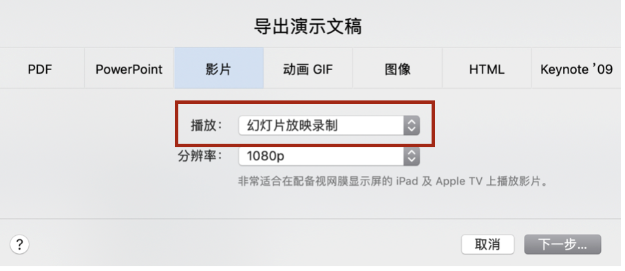
如果觉得导出的视频文件过大，可以使用HandBrake来进行压缩。这是一款开源的视频压缩软件，默认的预置（比如 fast1080p ）就很好用。
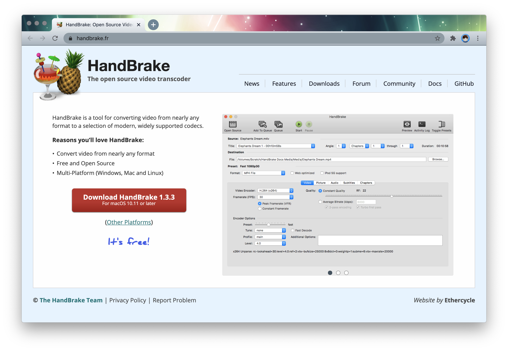
如何使用 PowerPoint的「录制幻灯片演示」功能生成视频课程
下边我们来看 PowerPoint 中如何操作，其实很类似，只是菜单名称和个别细节不同。选择菜单「幻灯片放映」→「录制幻灯片演示」。

同样会进入一个暗色的录制界面。

在左上角有一个时间正在走，在旁边有控制按钮，可以暂停。默认已经开始录制了，我们可以选择幻灯片进行讲解。全部讲解完成后，一样是导出视频。

在顶部菜单中选择「文件」→「导出」。
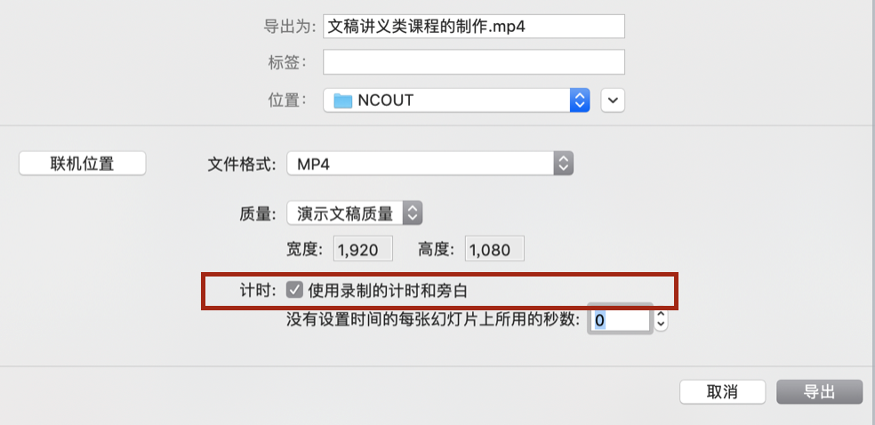
也有一个需要特别注意的地方，就是在导出窗口中要选中「使用录制时的计时和旁白」。
幻灯片导出为视频
单从录制来讲，前一种方法就非常方便了，可以说是一气呵成。但如果录制完成后我们发现有几句话讲错了需要修改，那么就相当麻烦了。究其原因，主要在于虽然幻灯片是一页一页的，但音频却是整体录制的，所以音频出问题就只能重录。
那么我们能不能让音频也变成一段一段的，对应到每一页呢？这样我们以后再修改的时候，只需要重新录制那一页的音频。
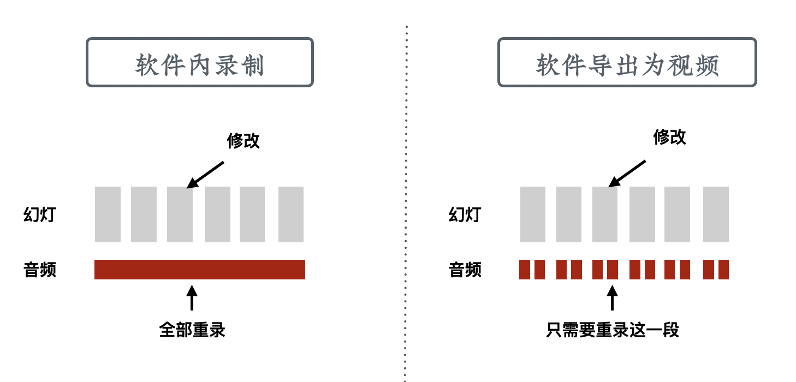
这就是我们第三种方案的思路。Keynote 和 PowerPoint 虽然没有提供分页录制的功能，但它们都能往幻灯片上添加音频，并将其合并到视频中统一输出。
所以我们要做的，就是在每一页幻灯片上，添加上语音讲解的音频。比较方便的地方是，这两个软件都支持直接录制语音讲解，而且一页幻灯片上可以录制多段，还能手工调整顺序。
下边我们来看具体如何操作。
如何使用 Keynote 以「导出为视频」的方式生成视频课程
还是先来看 Keynote。第一步依然是制作好图文部分的内容，最好把要讲的文稿放到演讲者注释区域，这样录制的时候可以参考。
然后先选中要添加语音讲解的幻灯片，从菜单中选择「插入」→「录制音频」。
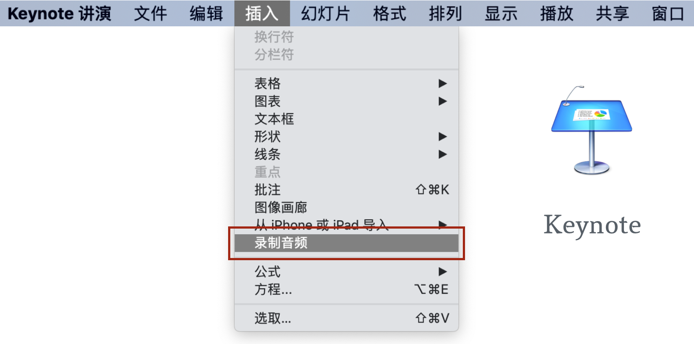
在弹出的小窗口中点击录音按钮就可以开始录音。

录制完成可以试听，没问题后再插入到当前幻灯片。当一张幻灯片有多个音频时，可以选择右上角的「动画效果」菜单，再点击右下角的「构建顺序」就可以看到当前幻灯片中的音频列表了。被选中的时候，会有蓝色描边，通过拖拽可以很方便地调整顺序。

导出和之前类似，还是通过「文件」→「导出为」→「影片」。

但需要注意的是，这次在导出窗口中，播放选项要选为「自动播放」。

同时，我们还要把下边两个等待时间设置为「0」秒钟。
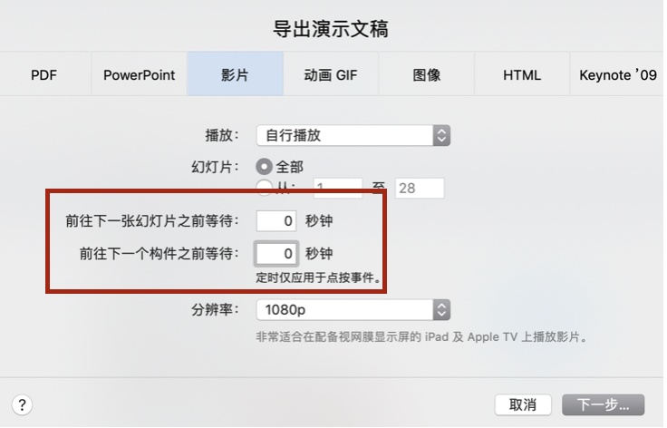
如何使用 PowerPoint 以「导出为视频」的方式生成视频课程
再来看看 PowerPoint 里边的做法。给幻灯片添加语音讲义也在菜单「插入」→「音频」中。
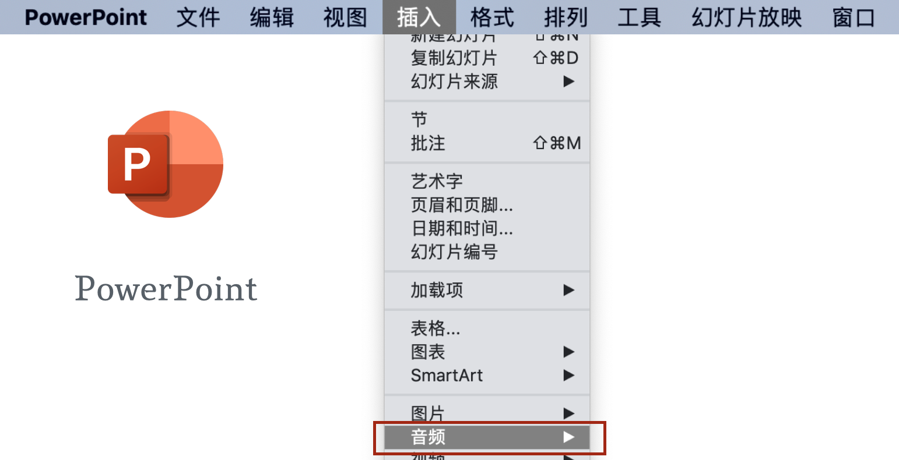
选择「录制音频」可以直接录制。
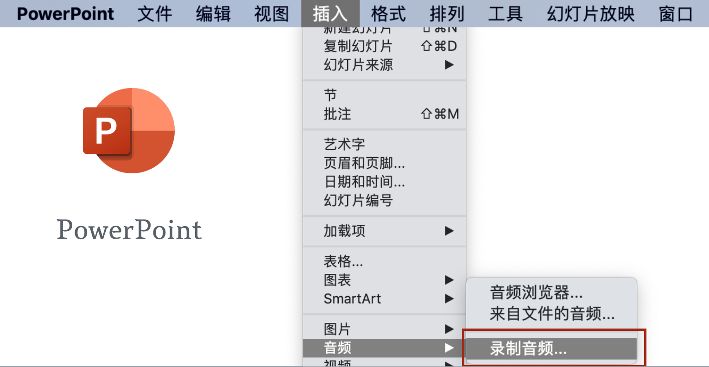
下边我们看看怎么调整多个音频的顺序。点击「动画」菜单，在右边会出现一个「动画窗格」，再点击它，在最右边就可以看到当前幻灯片上所有的音频的列表。
音频前边还有编号，可以一一对应到幻灯片上的音频。通过调节它们的上下顺序就可以手动的指定最终的音频播放顺序。
细心的同学可能会留意到这些音频都会被放到一个叫做动画的菜单里面，其实这个菜单的功能是指定动画播放的顺序，音频被当做动画的一种，所以也在里边了。通过同样的方式还可以控制插入的视频的播放顺序。

最后依然是通过「文件」→「导出」来生成视频，但是记得去掉「使用录制的计时和旁白」前的小勾，同时把「没有设置时间的每张幻灯片所用的秒数」设置为「0」。

屏幕录制类课程片段的制作
屏幕录制的原理
屏幕录制软件的原理，是不停地截取屏幕画面，然后和音频合成为最终视频。屏幕录制的优点是可以把电脑屏幕上显示的所有东西都录下来，不管你在哪个应用里边，不受应用本身功能的限制。所以可以非常直观地向学员展示完整的操作。
屏幕录制的软件
在试用了很多屏幕录制软件以后，我们选择了 OBS 。它的优点主要有：
- 功能强大
- 开源免费
- 跨平台
功能强大
OBS 不但可以录制屏幕，还有一个非常强大的功能就是直播。现在很多视频网站的直播都支持用 OBS 来进行推流。所以学会了它，不但可以录制屏幕，而且可以进行直播，一箭双雕、非常划算。
然后，OBS 可以非常容易地进行屏幕之间的叠加，比如画中画模式，这就非常适合我们马上要讲到的「真人出镜」和「虚拟形象」类型的课程片段。
同时呢，OBS 还支持通过快捷键在各个场景之间来回切换，在录制课程的时候可以非常方便的进行转场，这个功能不少收费软件都没有。
开源免费
和那些昂贵的收费软件不同，OBS 是开源而且免费的，这意味着使用它没有任何版权风险。我们在制作付费课程的时候，需要特别留意版权方面的问题。因为平时以个人身份在免费文章和视频中用一些字体、图片是没问题的；但在收费的商业课程中，就可能面临被起诉索赔的风险。
跨平台
再来说一下，为什么跨平台的特性非常重要。在课程中，尤其是编程类课程中，我们经常会遇到需要讲解某个工具软件在各个操作系统上的安装和使用的情况，这时候就需要在多个平台上录屏。
如果使用一个特有平台上的录屏软件，在录制其他平台上的课程内容时，就不能使用了。只能重新购买和学习一个新的录屏软件。这不但浪费钱，更浪费时间和精力。
而使用 OBS 就没有这种困扰，它不但支持 Windows 和 Mac 系统，连主流 Linux 系统都是支持的。
所以，在我们后续课程中，将以 OBS 为例进行讲解。
OBS 的层次逻辑
OBS 的功能非常强大，还有包含了直播相关的功能，所以需要理解它特有的一些概念后，用起来才会更加顺手。
像一般的屏幕录制软件，只需要启动后点击录制按钮，进行录制就完了。但 OBS 中，它有自己的层次逻辑。

场景
OBS 的第一个层次叫做「场景」，你可以把它理解为一种预设。
为什么需要场景？比如我们一个讲师，他每天上午要进行直播，这个时候视频的来源是摄像头和电脑屏幕；然后他每天下午要录制课程，这时视频的来源就只需要电脑屏幕，但他有两块屏幕，他希望都录进去。
如果没有场景这个概念，那我们每天上午到下午的时候，就需要不停的修改配置，非常麻烦。而有了场景以后，我们只需要把上午和下午定义成两个场景，使用的时候切换下就OK了。
你可能会想为什么要叫「场景」而不是直接叫「预设」呢？因为 OBS 中场景比预设更为常用和强大，它是可以实时切换的。
也就是说，如果我们有三个显示器ABC，可以在场景一里显示A；在场景二中显示BC；然后根据需求通过键盘快捷键来切换，甚至还能给它添加转场特效。
来源

在定义好「场景」以后，就可以往里面添加「来源」。最常用的来源其实就两类，也就是视频和音频。视频最主要的是显示器，也就是电脑屏幕，偶尔还有摄像头。音频的话主要就是麦克风。
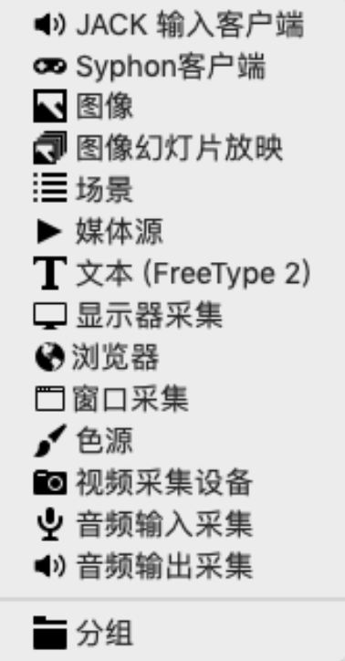
来看一下 OBS 的来源菜单。
首先它提供了「图像」和「图像幻灯片放映」，如果我们想在视频上面显示一张固定的图片或者图片轮播可以用它。
比较有意思的是，我们还可以把一个场景指定为来源，这样就可以非常容易地实现场景嵌套。也可以把媒体作为一个来源，这样就会在画面上面播放另外一个视频。
文本来源这里可以输入一些文字，指定它的颜色、字号和字体，然后它就会显示到屏幕上方。可用来显示我们机构的品牌名称之类的。可以看到，一些本来是后期才进行处理的功能，在 OBS 里都可以通过来源来实现。
显示器采集也就是我们的屏幕；视频采集设备通常就是指摄像头；音频输入采集这里通常就是耳机、麦克风或者外接的USB声卡之类。
这里还有一个音频输出采集，可以用来做多层次的音频加工。比如说我们电脑上有一个软件，就像柯南的蝴蝶结一样，可以对输入的声音进行变声，那我们就可以把这个软件的输出作为来源接入到 OBS 里边，录制下来的声音就是变声后的效果。
来源的层次
在多个来源之间，其实是有上下层级的概念的。打开 OBS 的来源小窗口，我们可以看见当前已经添加的所有来源。
来源是从上至下进行覆盖的。也就是说来源窗口的最上边一层，在最终视频中也会显示到最上面，上一层的内容会压住下边各层的内容。

这个对于我们制作真人出镜类型的课程片段很重要，因为它通常是通过摄像头和显示器两个来源叠加得到的。摄像头的画面小、通常显示在右下角；显示器的画面大，往往覆盖整个视频画面。在来源窗口里，摄像头需要在显示器上层才看得见，不然会被显示器画面完全挡住。
滤镜

如果通过来源采集的信息不是百分之百符合我们的需求，还可以通过滤镜来进行进一步加工。OBS带有两类滤镜，一类叫做「音视频滤镜」，可以对音视频进行处理，比如进行噪音的抑制或者把音量放大；另一类叫「效果滤镜」，包括各种各样的特效，比如「色度键」可以用来抠背景。
真人出镜类课程片段的制作
虽然前面其实已经陆续讲到了真人出镜类课程片段的基本原理，这里还是再明确下。
什么是真人出镜类课程片段
「真人出镜」类的视频非常简单，只需要使用摄像头、手机或者摄影机直接录制就好了。而「真人出镜」类的课程反而要复杂一些。这是因为在课程中，讲师其实并不是主体，课程内容才是。所以我们往往会采用「画中画」的模式，将讲师的头像部分做成一个小方块放到画面中。

但这有一个小问题，就是这个方块会带背景。如果它的背景和作为主体的课程不搭，看起来就会比较别扭。要是能把背景变成透明的，它就能更好地融入到课程中。
抠图
那么，怎么才能让背景变成透明的呢？答案是「抠图」。对于计算机来讲，将数字内容的一部分变成透明是非常简单的，真正的麻烦在于它不知道哪一些像素是背景、哪一些像素是讲师，所以我们需要一个方式来告诉计算机。
现在最常用的，也是最简单有效的一个办法，叫做「绿幕抠图」。就是在讲师身后放上绿色的背景布，再告诉计算机，绿色的部分都是背景，把它抠掉。这样就实现了背景的透明。
有同学可能会问说，为什么非要绿色，其他的颜色行不行？答案是可以的，但如果把背景设置成黑色，很多人的眼睛和头发都是黑色的，这些部分也会被透明，看起来会很灵异。
而绿色在日常生活中出现的频次比较低，所以一般默认用绿色来作为背景。但如果有天你穿了个绿色的衣裳，那就可以考虑换用蓝色的背景了。

这一部分的具体操作是这样：
- 在场景中添加一个「显示器采集」来源，选为我们想要录制的电脑屏幕，放到来源窗口最底层。
- 在场景中再添加一个「视频采集设备」来源，选为摄像头，将其放置到屏幕右下方，在来源窗口中位于显示器之上。
- 在摄像头来源的右键菜单中，选择「滤镜」，在「效果滤镜」中添加一个「色度键」滤镜，背景为默认的绿色。
- 调整「相似度」和「平滑」的值，让背景消失得更为柔和。


关掉滤镜窗口，这时候在 OBS 的预览界面上我们看到的摄像头画面背景就应该已经透明了。

真人出镜的其他细节
如果你是使用笔记本电脑，通常自带一个摄像头；如果是台式机，就需要自己装一个。摄像头需要对着讲师的脸，因为摄像头看到的，就是学员最后在课程里面看到的角度。
然后我们在讲师背后竖一个比较大的绿幕，充满整个摄像头的背景区域。一般两米宽高就够了，不够的话可以调整摄像头。
绿幕可以在电商网站输入「绿幕布」关键词搜索购买。有一些专业的幕布会比较贵，但我们早期可以买便宜的幕布来试水，一般几十块钱就能搞定。
为了让讲师和背景之间分离得更清晰一些，可以再通过光源进行补光。这里我们用手办做了个示意图给大家。这个灯的色温不能调，所以看起来稍微有点偏黄。实际录制的时候，可以用白色的灯来补光。

虚拟形象类课程片段的制作
虚拟形象的原理
最后，我们再来看一下虚拟形象类课程片段的制作。虚拟形象实际上跟真人出镜差不多，但因为可以用卡通的形象来代表真人，所以形式上看起来会更加有意思，更适合年轻的同学。
在上一节里面，摄像头里拍到的是真实的画面，现在我们要想将真实的变成虚拟的，就要使用虚拟摄像头。
所谓的虚拟摄像头，就是其实并不存在这么一个物理上的摄像头，这个摄像头是用软件来模拟的。但是其他软件并不知道，它们会以为这个摄像头是真实的，于是它们之间就可以无缝地进行整合。
FaceRig
我们使用的是 FaceRig 这个虚拟摄像头软件，它提供了很多的3D模型，还支持导入 Live2D 这个游戏和动画用得较多的模型格式。如果是通过 Steam 购买的 FaceRig，那么在创意工坊里边可以看到全球玩家上传的各种模型，喜欢的可以直接订阅，它就会出现在我们的 FaceRig 里边。
当然，我们也可以制作自己的卡通形象，生成模型并导入。顺便说一下，对于多人参与的课程来讲，虚拟IP是非常有用的。如果我们将大量的精力和推广资源放到真人讲师的IP上面，万一这个讲师离开团队，之前的投入就废掉了，甚至会变成竞争对手的资源。但是如果我们采用虚拟IP，就完全没有这个问题。
步骤
为了模拟摄像头，FaceRig 构造了一个 3D 空间。这个空间由「模型」和「背景」两部分组成。选好模型、配好背景，打开跟踪器让模型和我们的表情同步，就实现了用虚拟形象代替真人形象。
下边我们更为详细地讲述下步骤：
- 购买和安装
- 选择模型
- 选择背景
- 打开追踪器
- 打开广播
购买和安装
最方便的方式是在 Steam 这个平台上进行购买，它会帮你自动安装各种依赖，确保能运行起来。如果想用 Live2D 的模型，还需要购买对应的插件。

选择模型
启动完成以后，点击顶部菜单最右边的UI按钮就可以切换右侧的面板；这个面板的第一格就是我们的模型。
点开以后可以选择喜欢的模型。

选择背景
还是在右侧的面板，第二个图标就是。点开它可以看见预置的各种背景。如果想要最终背景透明，可以选择绿色背景方便下一步抠图。

打开追踪器
现在虽然模型都有了，但它跟我们真人说话的表情语气没有关联起来，所以要打开追踪器。点击顶部导航，「切换追踪」按钮（图上画红圈的），摄像头就会通过人脸识别来捕捉我们的表情。这个时候我们摇脑袋和做出各种表情的话，就会同步到模型上。

打开广播
这些都做完了以后，一定要记得还有最后一步就是要打开广播。所谓广播就是 FaceRig 把画面虚拟成一个摄像头，并同步到整个系统里，其他的软件就会把它当做一个真实的摄像头。
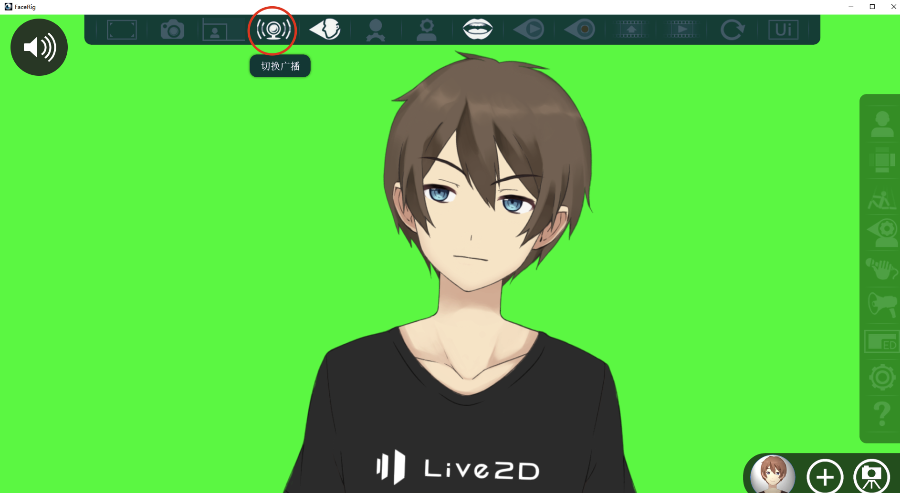
打开广播也非常简单，就是点击顶部的这个像电台一样的按钮。点击打开，再点一下关闭。
当广播打开后，在 OBS 里去添加一个新的视频捕捉设备的时候，就会发现有一个名字包含 FaceRig 的摄像头，把它作为来源，就可以引入和真人表情同步的虚拟形象了。
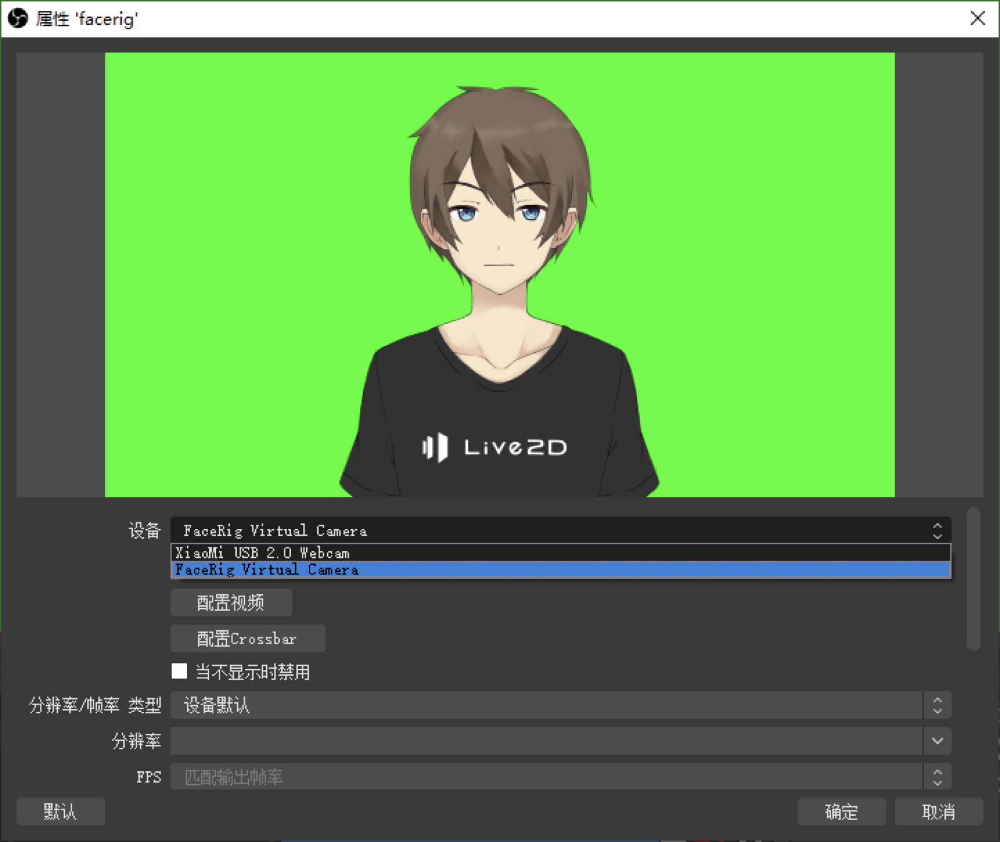
最常用的视频剪辑操作
视频剪辑是我们做课时用得非常多的技巧。剪辑是一门细节很多的技术，幸运的是，做课所需的只是非常基础的一些功能，所以我们才有可能花很少的时间学会。这也是我们这一节的内容。
剪辑软件
视频剪辑的软件非常多，但整体功能上大同小异。经过一系列的试用，我个人用得最多的是这两个软件：
- 苹果公司出品的 iMovie
- Adobe 公司出品的 Premiere（一般简称PR）
iMovie 是 Mac 专有的免费软件，完全可以胜任大部分的常规剪辑工作。后来苹果公司还开发了 iOS 版本，这样我们在 iPhone 和 iPad 上也能使用它。
如果我们只是想简单地调整下视频片段的顺序、删除某个片段、或者对某部分进行速度调整的话，iMovie 是个不错的选择。
PR 则是系统复杂、功能强大的专业剪辑软件，很多专业人士都在使用它。PR 是一个付费软件，但同时支持 Mac 和 Windows。
我们后续以 PR 为例进行讲解，在其他的剪辑软件里相关的操作也是非常类似的，往往只是菜单位置不同，大家可以自行摸索。
视频片段的调整
视频片段的调整是最常遇到的需求。因为我们在录课的时候很可能其中有一段讲错了，会想把它去掉，再把后边的内容给接上去；或者讲课时有一部分内容讲丢了，在后边补讲的，想把它给挪到前面去。这些情况时常发生。
比如说我们现在有一段视频，希望删除其中红色的部分，应该怎么操作呢？

直观来讲，应该是选中一个片段然后按删除键。有一些编辑软件就是这样做的。但在 PR 中，这个操作通常被分两步：先分段、再删除。

所以我们会先用剃刀工具将视频给切割成三段，切割的位置正好在红色部分的开始和结束，这样它就会变成一个独立的片段。
然后切换到选择工具，选择这个片段，再按删除键，片段就会被删除。
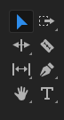
但我们会发现，视频中间空出来了一段空白。

这是因为在 PR 里边，连续视频并不是一种常态，所以它没有自动去掉两个视频片段之间的空白。可以在这段空白上点右键，选择「波纹删除」，这样后边的视频就会自动补上来了。

当然，在删除视频的时候，如果不是直接按删除键，而是点击右键，选择「波纹删除」会更加方便一些。
柔软的视频片段
这里有一个需要特别注意的概念。在我最初的想象中，视频片段应该是很「硬」的，当两个视频片段有重合时，后一个片段会自动后移并紧跟前一个视频对齐。但在 PR 中，视频片段是很「软」的，当两个片段重合的时候，重叠部分会被覆盖掉，再也分不开了。可以把它们想象成两个透明胶带，一旦粘上，就很难无损分开了。

所以，对于不熟悉 PR 的新手来讲，想要两个片段紧密连接，最简单的方式还是分开放，然后「波纹删除」中间的空白来自动对齐。
视频片段顺序的调整
正因为这些片段很「软」，当我们在进行顺序调整时，也要倍加小心。这里我们可以利用 PR 的多轨道。我们可以暂时把要移动的片段放到另一个轨道上，然后调整原来轨道上片段的顺序，挪出一个新的位置，再从外轨上把片段给挪回来。
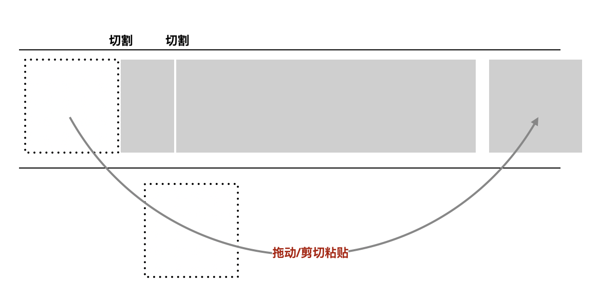
视频片段速度的调整
速度调整在做课时也很常见，比如说我们通过网络安装软件的时候可能就很慢，得操作二三十分钟，但我们不可能让学员一直等二三十分钟。一个方式是直接减掉这个过程，但如果其中又包含了一些操作细节，我们可能就需要把这一段视频加速。
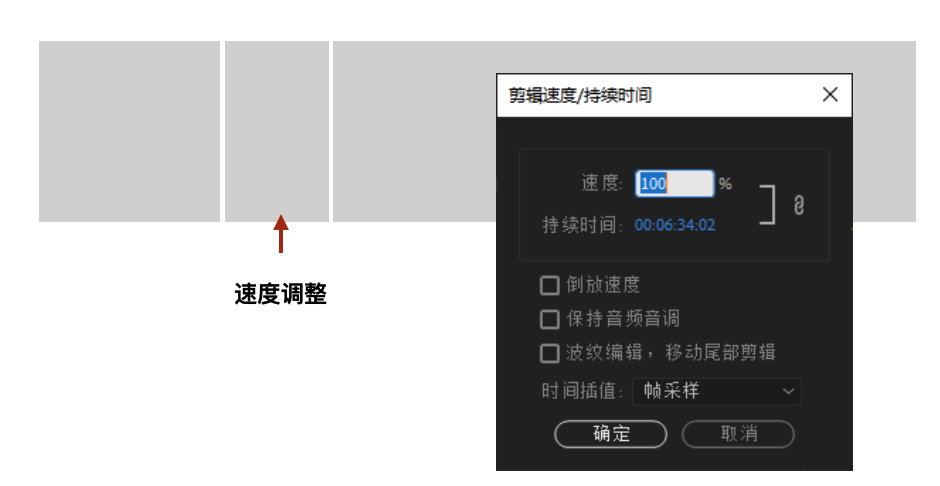
在需要调整速度的视频片段上边点击右键，选择「速度/持续时间」选项，会弹出设定窗口。 窗口上默认的速度是100，如果想加速，就改为大于100；想减速，就小于100。
有一个需要注意的问题，就是如果减速，视频片段会变长。如果前后有其他片段，就可能造成覆盖，所以这种情况下，最好放到另一个轨道上再调整速度。
另外，在加速的时候，原来的声音会变调，如果想要保持正常，记得选中「保持音频音调」。
视频中的音频处理
这个操作也是很常见的，比如讲课中有几句讲错了，但是不方便删除视频，可以只删除这一部分的音频。
但是，默认情况下，音频和视频是绑定的。所以我们需要将要处理音频的部分切割成独立的片段，然后在右键菜单→「音频增益」中把它的音量调到听不到（比如-100dB）。
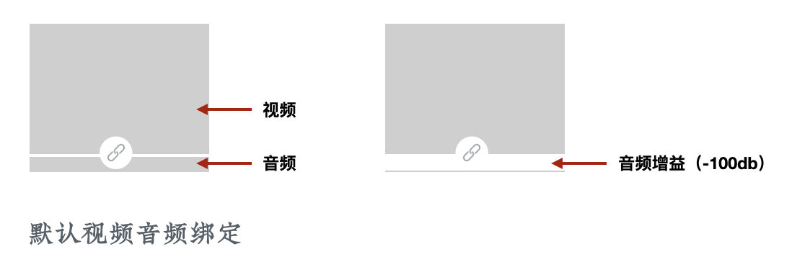
当然我们也可以通过选中片段后点右键菜单，选择「取消连接」来解除音频和视频的绑定。这样就可以随意编辑音频了。
除了像视频一样分段、调整顺序等，我们可能还需要对音频进行去噪、调音等更进一步的操作，这时候我们可以在对应的片段上点击右键，选择「在 Adobe Audition 中编辑剪辑」在另一个软件中来处理。具体的操作我们将放到下一节讲解。

最常用的音频处理操作
音频的后期处理和视频类似，也是非常专业的领域，所以我们这里也只讲最简单的处理。在我们做课时，经常会用到的技巧主要包括：
- 去噪
- 标准化
- 混响
- 去齿音和嘶声
下边我们依次来看看。
去噪
「去噪」就是「去除噪音」。一般分为两个步骤：
- 定义噪音
- 去除噪音
为什么会有「定义噪音」这个步骤呢？因为对于计算机来讲，它并不知道哪一部分声音叫做噪音。 比如我们在录一首歌的时候，邻居家的猫在旁边叫，这个声音就算是噪音。但如果是想录一个宠物视频，猫在里面就不是噪音，它可能是主角。所以是否是噪音，是需要根据场景来进行定义的，计算机理解不了这点。
当然，这个例子比较特殊。通常来讲，要去掉的噪音叫做「底噪」。就是声音很小的背景噪音，比如电流声，远处汽车和行人的声音。这种时候，只需要选取一段只有这些背景音的音频，将其定义为噪音，那么软件就可以把和它类似的声音去掉。
音频处理也有很多软件能做，但因为我们视频剪辑用 PR，所以音频用 Audition（简称 AU ）来做会更为方便。它在我们修改音频后，会自动更新 PR 里边的片段。
下边我们来看 AU 中具体怎么操作。首先选中一段只有背景噪音的音频，在顶部菜单中选择「效果」→「降噪/恢复」→「捕捉噪音样本」，就可以把它定义为噪音。

然后，在顶部菜单中选择「效果」→「降噪/恢复」→「降噪（处理）」，开始去噪。

记得在弹出的窗口中点击「选择完整文件」，再点「应用」就会开始处理。
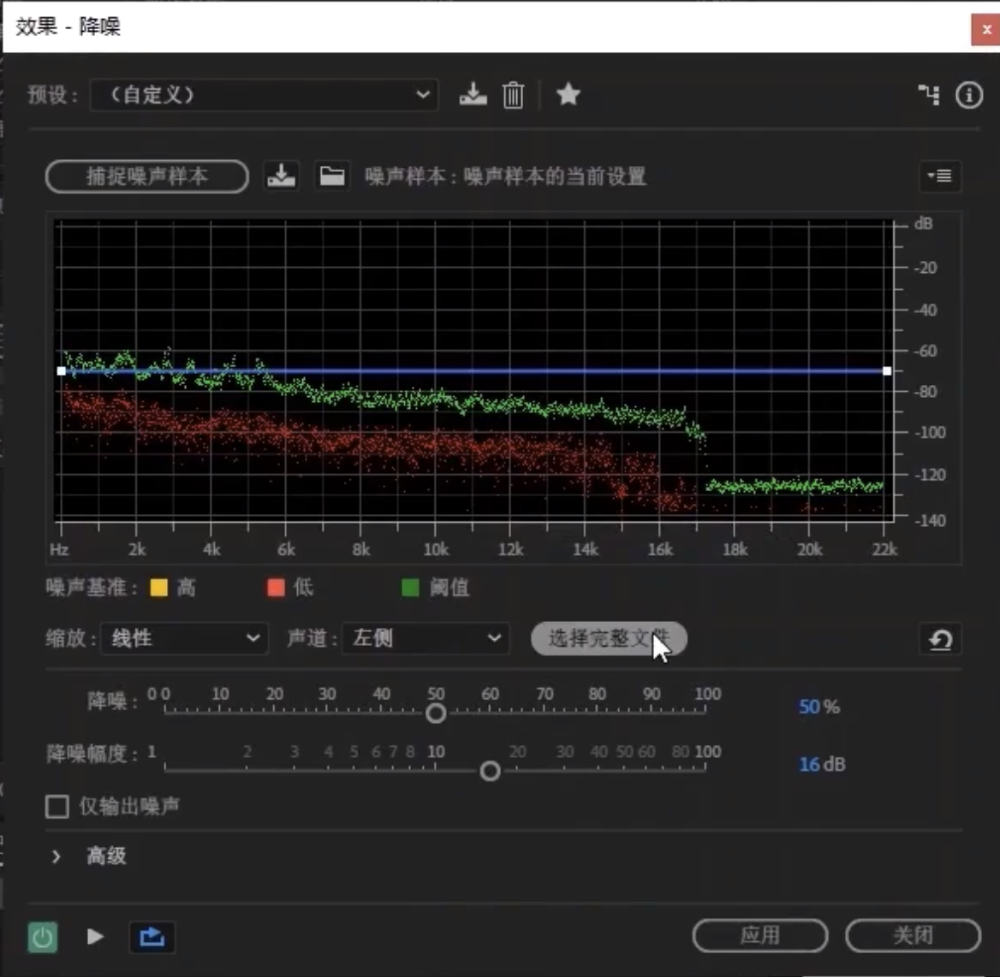
标准化
标准化也是一个很有用的功能。我们录音的时候，尤其是换了场地和设备录音的时候，可能声音的范围（最高音和最低音）就不一致。这种时候，就需要通过「标准化」来将这个范围统一，这样听起来音量差异才不至于太大。

在 AU 中的具体操作如下：
在顶部菜单中选择「效果」→ 「振幅与压限」→「标准化（处理）」。

然后在弹出的窗口中，可以将其标准化到 0 dB （如果觉得音量过大，也可以试试 -6 dB）。

混响
我不知道大家有没有这种感受，就是有时候听一些电脑生成的音频时，会觉得声音非常纯粹，很好听，但听起来不像是真的。而一些现场录制的音频，音质可能没那么好，但听起来却会有种非常强的空间感。
这是因为我们日常在说话的时候，声音会分成两个层次到达我们的耳朵。

一个层次是直接从发声处传到了耳朵里，另一个层次是声波打到周围的环境上，比如墙面、地面、桌椅上，被反射后，有一些很弱的声音以稍微延迟一点的时间进入我们的耳朵。我们日常听到的多是这种叠加后的声音。
在电脑中生成的音频如果不特意处理，是没有这种叠加的。这就让声音有点「平」或者「干」。为了增强声音的空间感，很多编辑软件提供了叫做「混响」的功能。其原理就是模拟现实中的声音叠加，将一部分声音强制延迟后混音，这样的声音更有立体感。
下边我们看看在 AU 中怎么具体操作。
在顶部菜单中选择「效果」→ 「混响」→「混响」。

在弹出窗口中，可以调节各项参数。点击播放按钮可以试听。
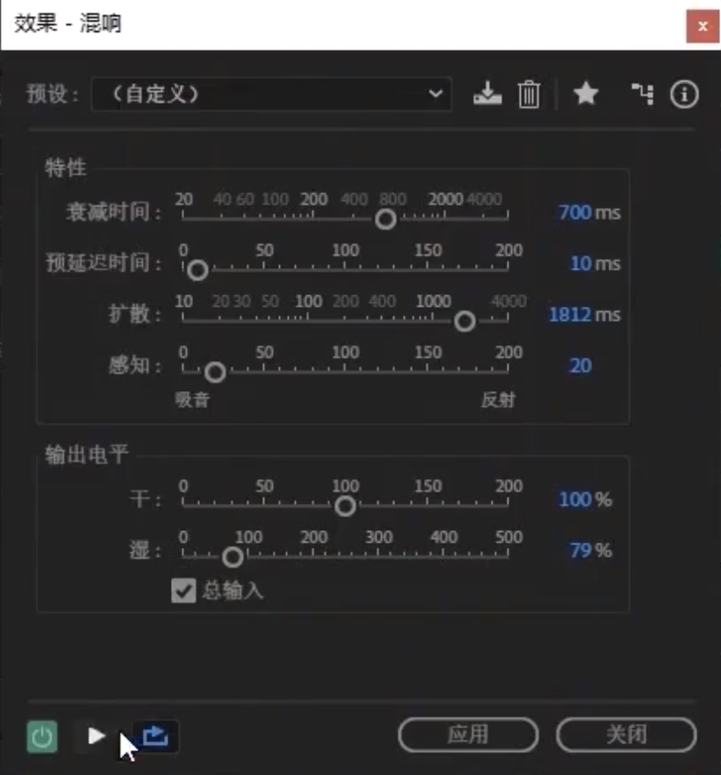
选择好以后，点「应用」进行处理。
齿音和嘶声
齿音是指我们说话时，呼入呼出的气流和嘴唇、牙齿之间摩擦产生的声音；嘶声则有些类似于广播电台中常听见的嘶嘶嘶的声音。这些声音混在音频中，可能听起来不那么舒服，所以 AU 也提供了工具来清除它们。这部分的操作很简单，这里就不详细说明了，这两个功能的菜单分别在：
- 齿音：「效果」→「振幅与压限」→「消除齿音」
- 嘶声：「效果」→「降噪/恢复」→「降低嘶声」
建议顺序
其实顺序并不是强制的，怎么都行。但考虑到标准化时有可能把底噪放大，所以我一般会按下图的顺序来进行各项音频处理操作。

整个过程中，去噪和标准化才是最重要的，其他的三项时间紧张时可以偷懒不做。
字幕的制作和自动生成
对于技术类课程来讲，字幕是非常有用的。一些技术名词光是读出来，有时候很难明白它是什么意思。而如果有字幕，就可以一目了然了。
字幕及其格式
所谓字幕呢，是指我们在播放视频的时候，显示在屏幕下方的、和语音同步的文字。为了让计算机正确地显示出字幕，我们需要告诉它两个信息：
- 这个字幕的文本是什么
- 这个文本应该在什么时间开始显示，在什么时间结束
也就是说，最基本的字幕信息应该包含「文字本身」以及「文字显示的时间段」。
当我们把多条字幕的信息合并放到一起，就有了字幕文件。字幕文件可以是单独的文件，在播放视频时载入并显示，这种方式称为「外挂」；也可以在压制视频时直接压制到视频里，这样即使播放器不支持字幕功能，也可以正常显示。
字幕的格式有很多种，srt 格式是最简单的格式之一。
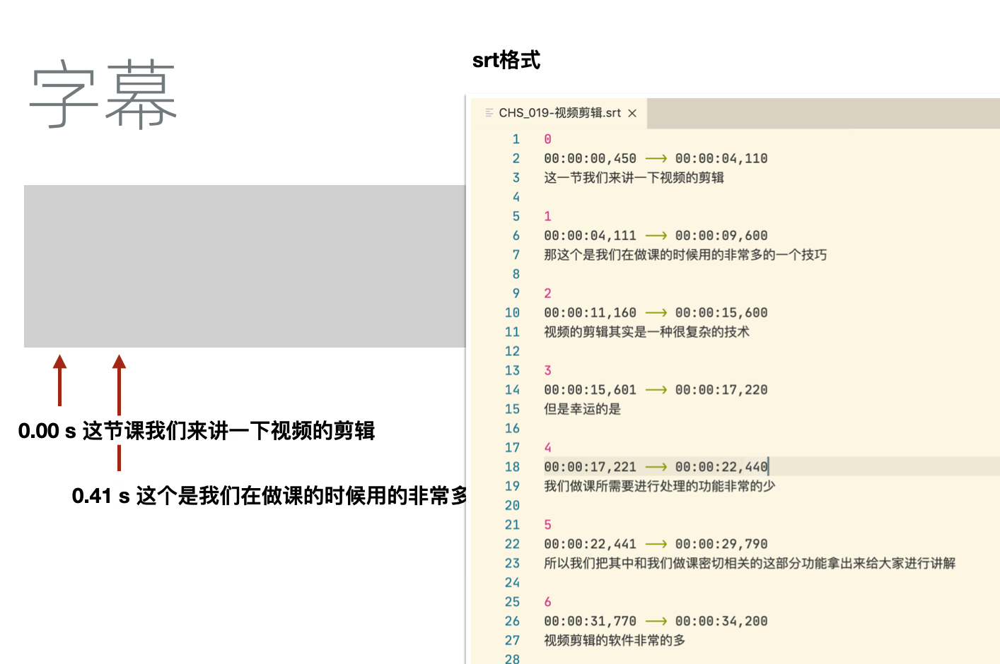
它由多段文本组成，每段文本分为三行：
- 第一行是序号，一般从 0 开始递增
- 第二行是显示时间段，中间用箭头分隔
- 第三行是这个时间段应该显示的文字
字幕编辑软件
我们使用的字幕编辑软件是 ArcTime，它是一款跨平台的免费软件。启动以后的界面是这样的：

左上部分区域是视频的预览区，可以从顶部菜单的「文件」→「导入音视频文件」载入要编辑字幕的视频。然后它就会显示预览区。
预览区下方就是字幕区，有根据音频生成的波形在上边。在这个区域点击右键，选择「插入空白字幕」，就会插入一个空白的字幕条，双击可以输入字幕，拖拽可以调整显示的时长和起止时间。
添加好字幕以后，点击预览区的播放按钮，可以实时地看到新添加的字幕效果。需要注意的是，目前的版本中，删除某条字幕的操作是不能撤销的。这可能是这个软件为数不多的缺点了。
整个视频的全部字幕添加完以后，点击顶部菜单中的「导出」→「字幕文件」就会将刚才编辑的字幕生成一个字幕文件了。
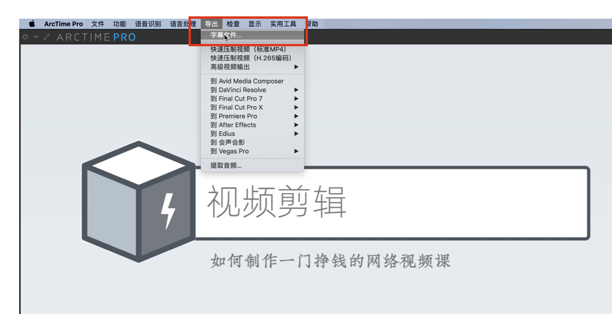
如果想要把字幕直接压制到视频里边，则可以选择「快速压制视频」选项。
字幕的自动生成
ArcTime 还内置了一个为视频生成字幕的功能，放置在「语音识别」菜单中，但这些功能是收费的。
对于程序员来讲，有一个更为廉价的方式获得同样的效果，那就是直接写代码去调用云服务商提供的 API。比如阿里云、腾讯云和百度翻译平台就提供了相关接口。
更有开发者已经在 GitHub 上开源了基于这些接口的命令行和客户端软件。大家可以在 GitHub 搜索「VideoSrt」，自行安装试用。

流量池和二次购买
课程制作完成上线以后，并没有结束。长征才刚刚开始，我们需要不断得去运营它。这一节就来聊一聊流量池和二次购买。
没有流量池的情况
先来看一下在没有流量池的情况下，课程转化是什么样子的。
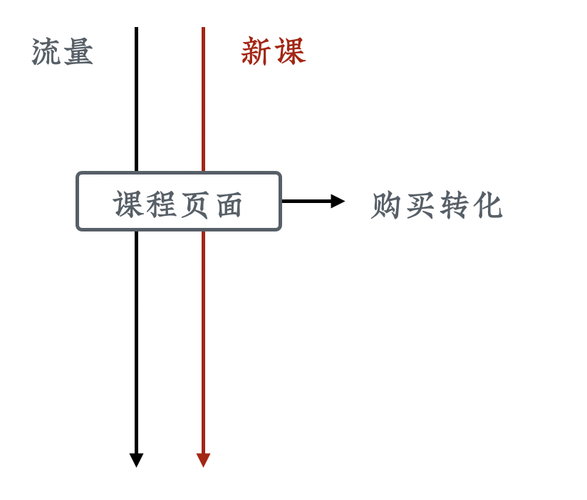
首先，我们将自有的或者购买的流量引导到课程页面，以触发销售转化。但如果我们没有采取更多措施，之后这个流量就走掉了。当上架新课时，又需要重新寻找或购买流量。
这种方式优点是简单，但今天操作起来问题很大，因为我们已经错过了之前流量爆炸的时代，现在流量已经很贵了，这么浪费太可惜。那么，能不能把流量囤起来，供以后使用呢？
学员池

最简单的操作就是，把购买过课程的学员放到「学员池」里。当上架新课程以后，可以直接给他们发通知进行销售。这样就实现了流量的二次使用。很多同学觉得这是显而易见的，但事实上在操作的时候却很容易出问题。
比如说，很多讲师只是直接使用课程平台进行学员管理，而很多的平台不允许讲师给学员批量发送私信，甚至还会做关键字过滤。这种情况下，我们对学员的触达能力是非常弱的，需要建立更可控的流量池来替代。
访客池

学员池重用了已经购买过课程的流量，但更多的没有购买课程的访客流量还是流失了。所以我们还可以更进一步，来做访客池。
把我们课程中有意思、有传播点的内容做成免费的素材，进行多渠道分发，把用户吸引过来并放到这个池子里，以备以后发送通知、触发销售。
常用的渠道包括：
- 搜索引擎
- 社交网络
- 媒体平台
- 课程平台
- 行业网站
学员池和访客池是我们最主要的两种流量池。
构造流量池的工具
互联网发展到现在，各种产品已经极大的丰富，所以有大量的工具可以用来构造流量池。因为课程销售有非常明确的商业诉求，所以我们对流量池也有相对明确的评判标准。这里分享下我常用的三个标准：
- 进入门槛低：最好能免除用户注册，尽快获得用户的基本信息和触达权限
- 可触达率高：这样我们的销售信息才能被更多人看到
- 触达免费或廉价：太贵了用不起
如果想要获取种子用户用来验证大纲，还需要考虑互动性。
针对微博、公众号、企业信号、微信群、自建 APP 这几种最常用的方案，我们整理了一个对比表格以供大家参考：
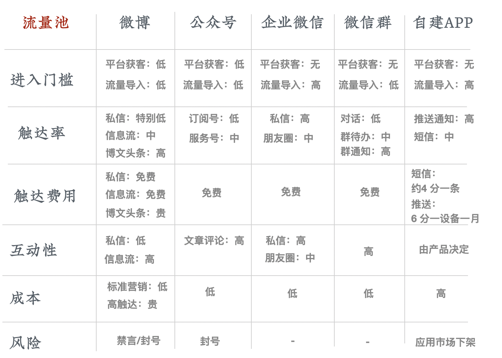
多级流量池
各种流量池都有自己的优缺点，我们应该选取当前阶段最适合的来进行流量的存储。我们也可以分阶段、渐进式地建立多级流量池，以在投入和收益上获得平衡。
比如早期我们可以直接使用微博的关注、哔哩哔哩的订阅来做流量池；然后将一部分核心用户引导到微信群和企业微信一对一服务中。这样把微博的获客门槛低和微信的触达率高这两个优点结合起来了。
在用户规模大一些以后，我们再去开发自己的App，实现对用户流量更高级别的控制。

如何有效地反盗版
树立反盗版的正确思路
虽然几乎所有讲师都认为反盗版是必须做的，但未必都明白反盗版的意义，觉得就是少挣了钱。实际上并不是这么简单，盗版最大的问题，是对正版用户带来的不公平。同样的课程，有人花了几千块钱买过来，有人却一分钱不付就可以得到，这让正版用户显得很傻。
其次，很多讲师以为把课程放到课程平台上，平台就会帮着进行反盗版，自己就不用管了。事实上，大部分平台的反盗版措施都非常有限，通常只能由讲师提交盗版链接，他们投诉下架。如果对方将课程放到境外网站，连下架都做不到。而且有些平台每周定时收集处理一次盗版信息，还不如自己直接投诉效率高。所以我们不能把反盗版推给平台去做，他们只能起到辅助作用，我们自己还是要足够重视。
还有一个普遍的错误想法，就是很多程序员觉得盗版是不可能完全杜绝的，所以干脆就不防范了。我们的确没有办法从技术上来完全杜绝视频课的盗版，但却可以采取各种措施来降低被盗版的概率。
要从做盗版的人的经济收益的角度来思考盗版这件事情，如果我们的课盗版门槛很低，就可能导致大量盗版，因为不需要付出太多的代价。相反，如果我们课的盗版门槛很高，那就要花很多功夫才能盗版。
很多盗版手段是针对平台的，当我们课程的盗版门槛变高以后，盗版狗有两个选择，一个是投入时间和金钱去升级盗版手段，另一个选择是用原来的盗版方法继续盗版其他门槛低的课程。绝大部分情况下，它们会选择后者。
有同学可能会说，这样其实并没有解决盗版的问题。是的，从宏观上来讲，确实没有解决盗版问题；但从个体的角度来看，我们又的确避免了自己的课程被盗版。
要从宏观层面上去解决知识产权问题，需要国家、法律、以及社会各方面一起持续不断地推动，我们作为个体，积极响应国家的政策，并保护好自己的知识产权，就是在为这事添砖加瓦。
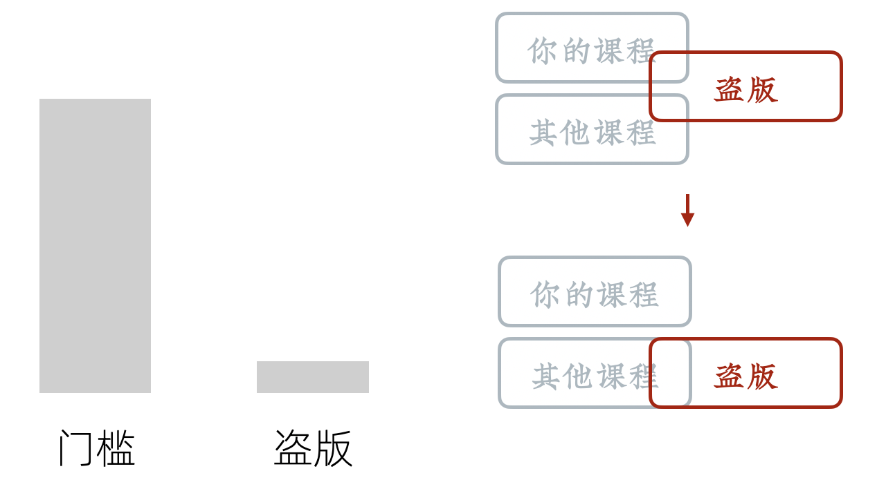
如何有效地反盗版
所以反盗版其实就是要不断提升盗版的门槛，降低盗版狗的收益，让它们无利可图。我们自己实践过的方法中，最有效的可以归纳成四个字、两个词：卖空和卖多。
卖空
卖空其实就是预售，还没有课程，就开始销售。你很难盗版一个还不存在的课程。而且在我们精益网课流程中，本来就是通过预售来验证需求的，所以做起来很顺手。
这个思路再扩展一下，比起一次性提供课程，连载课程的反盗版门槛更高。因为它每周只更新一到两节课程，持续时间很长。这样盗版的成本一下被提升了 N 倍。
卖空的思路很简单，但效果却非常明显，强烈推荐大家尝试。
卖多
卖多是说，现在大家课程放到平台上，盗版门槛是一样高的。但是我们可以多提供一些平台没有的、盗版不了的服务来反盗版。这些服务可以包括：
- 答疑
- 督学
- 社群
- 线下服务
在进行这些服务的时候，我们可以先进行身份确认，无法提供购买证明的人就不能享受这些服务了。
更进一步，如果我们把课程中不可或缺的部分挪到这些服务中来，那么看盗版视频的人甚至不能完整的学完课程，这就让盗版课程失去了意义。
有一个不错的实践可以分享给大家。我们的主要课程是全栈课，既有前端又有后端。为了反盗版，我们开发了一个云端的编程环境，将后端课程放在其中，然后限制只有正版学员才能登录这个系统，采用这个系统的课程后来就再也没有被盗版过。
这个系统的开发很简单，只需要在云平台上启动一个基于容器的、带有桌面的系统，然后再运行一个基于 Web 的 VNC 去连接它，就可以实现在浏览器中远程操作桌面系统了。感兴趣的同学可以去了解下NoVNC这个开源项目。
进一步提升副业的鲁棒性
网课+独立开发的双引擎副业模式
前面我们通过两个大章节的实践课程，为大家详细讲解了怎么通过独立开发和网络课程制作来发展副业。之所以会选择这两个方向，除了它们非常典型、有很高的投入产出比，还有一个原因 —— 它们之间可以形成非常好的互补。
目前看来，在国内要通过独立开发赚到一流企业程序员的年收入（大致三十到五十万），还是比较困难的。免费加收费模式虽然后期收益巨大，但前期需要长时间的投入。
相对而言，网络课程的售卖更容易带来现金收益。如果我们把独立开发的整个过程完整的录制下来，并加工成网络课程进行销售，那么即使独立开发项目最终难以通过销售软件和服务来赚取足够多的收益，我们还可以通过网络课程获得收入。
而且，不管对于课程学员还是独立软件/服务使用者来讲，都更有益。课程的学员可以学到更为真实、更贴近一线、且经过事实验证的开发技巧；软件/服务使用者则可以获得详尽的文档、架构说明，更有机会进一步深入了解整个规划、设计、开发过程，充分理解业务，甚至因此变成代码贡献者。
从流量上讲，软件/服务可以给课程带来学员；课程可以给软件/服务带来用户。两者互相促进，为我们的副业更添了一层保障。

最终，我们就可以实现一个多次利用「副产品优势」的三级收入模式。在这个模式下，我们首先通过主业赚取最核心的收益，以供日常生活和基本发展。然后，我们在主业工作中积累的知识、经验、人脉基础上，开发我们的副业，比如独立软件或服务。在独立开发的过程中，我们再次把它的副产品——制作过程，录制成课程进行售卖。最终，我们可以分别从主业、独立开发以及课程三个渠道获取收益。
这样即使某些收入源不是特别好，我们的整体收入还是相对高的，这就让我们有足够的时间和资源去修正这些错误，让整体发展得越来越好。